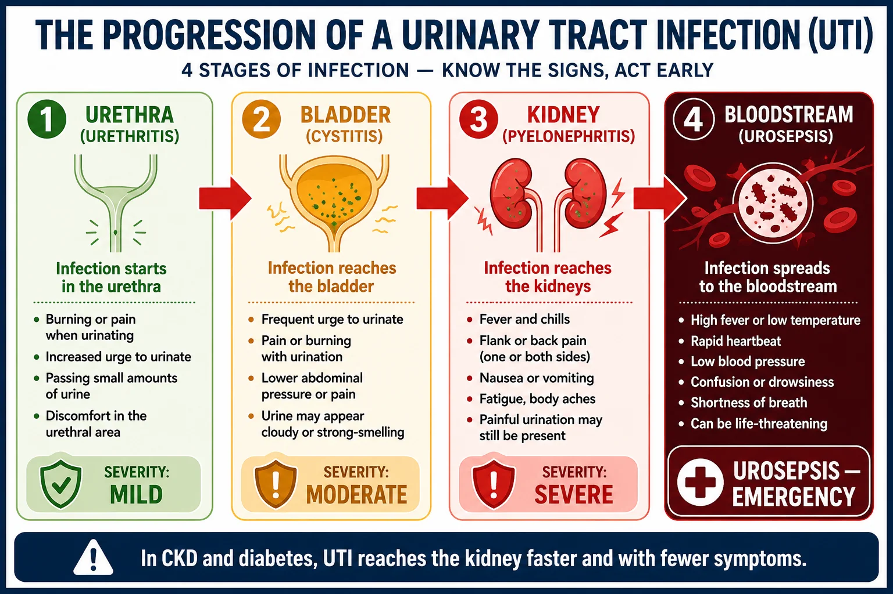
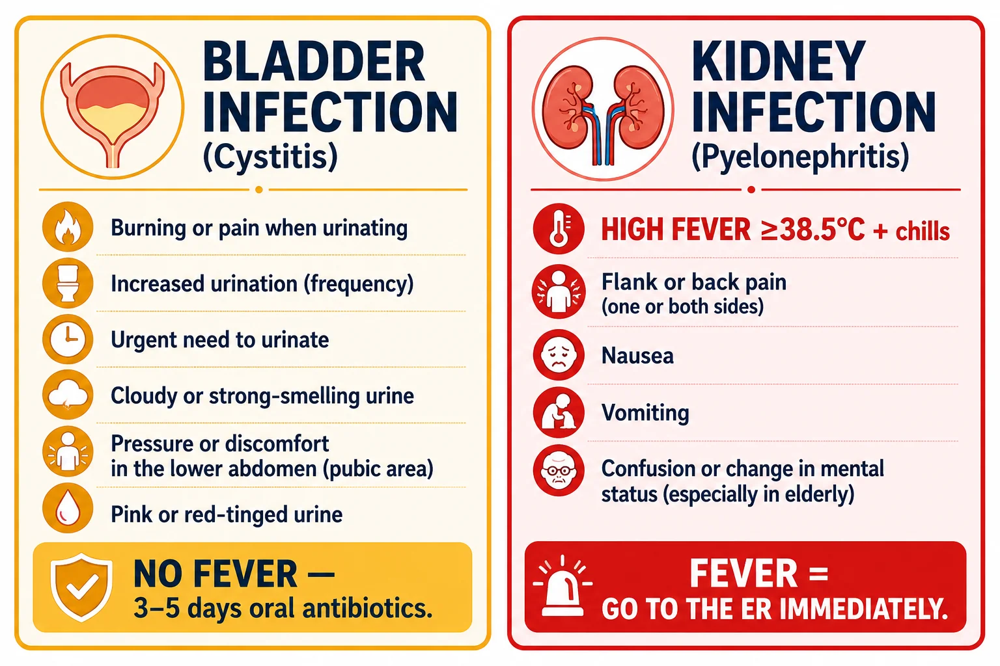
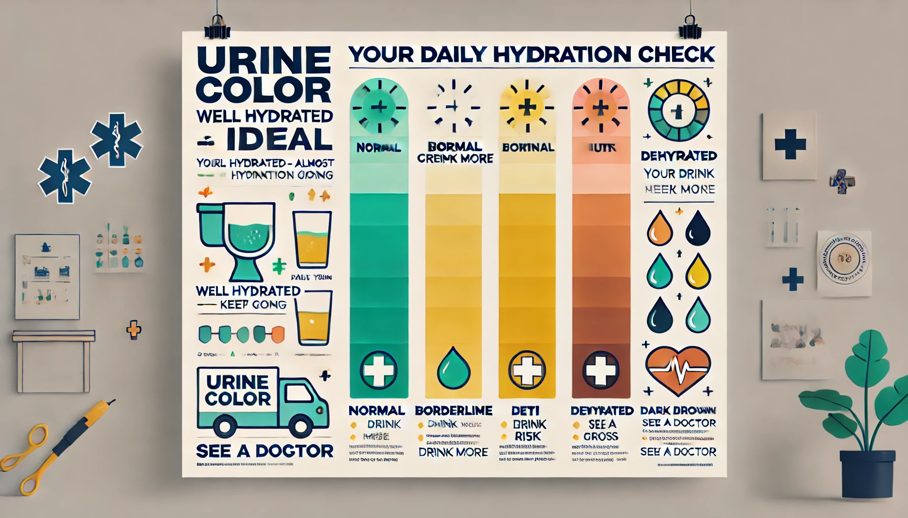
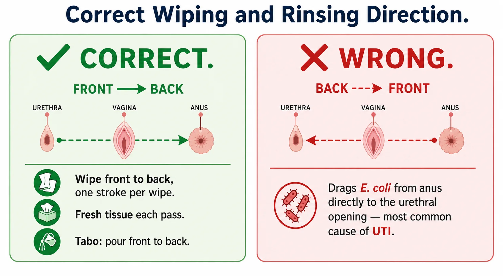
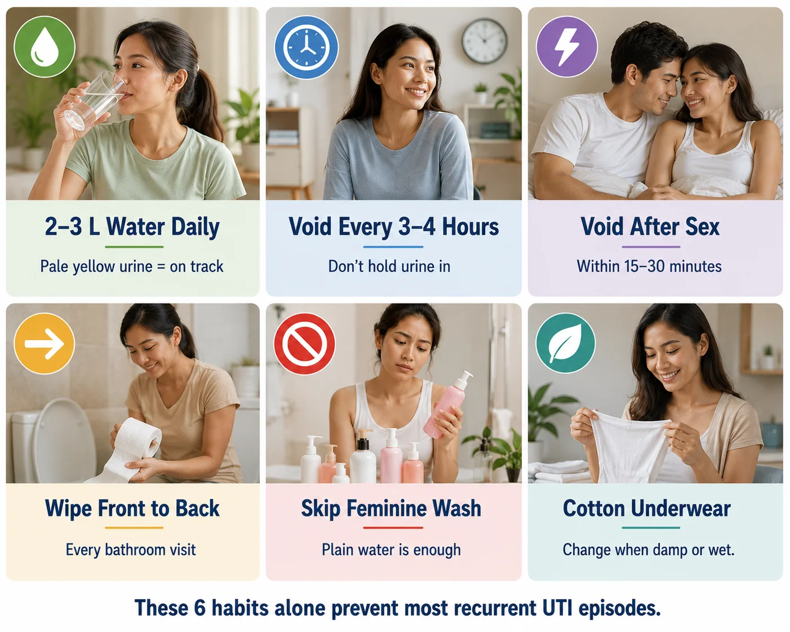

What Is a Urinary Tract Infection?Ano ang Impeksyon sa Urinary Tract?Unsa ang Impeksyon sa Urinary Tract? Ano ing Impeksyon king Urinary Tract?

Fever separates simple cystitis from kidney infection. Any UTI with fever above 38.5°C and flank pain requires prompt medical attention — in CKD patients, this can escalate to sepsis within hours.Ang lagnat ang nagpapaiba ng simpleng cystitis mula sa impeksyon sa bato. Ang anumang UTI na may lagnat na higit sa 38.5°C at pananakit sa gilid ay nangangailangan ng agarang atensyong medikal — sa mga pasyenteng may CKD, maaari itong maging sepsis sa loob ng ilang oras.Ang hilanat ang nagbulag-bulag sa simpleng cystitis ug impeksyon sa kidney. Ang bisan unsang UTI nga adunay hilanat nga mosobra sa 38.5°C ug kasakit sa kilid nagkinahanglan sa dali nga atensyong medikal — sa mga pasyente nga adunay CKD, mahimong mahimong sepsis sulod sa pipila ka oras. Ing lagnat ing nagpapaiba ning simpleng cystitis mula king impeksyon king batu. Ing anumang UTI a atin lagnat a higit king 38.5°C at pananakit king gilid ya nangangailangan ning agarang atensyong medikal — king deng pasyenteng atin CKD, maaari itong maging sepsis king loob ning ilang oras.
A UTI is a bacterial infection anywhere in the urinary tract — the kidneys, ureters, bladder, or urethra. The vast majority are caused by Escherichia coli (E. coli) from the bowel entering the urethra. In patients with CKD or diabetes, a simple bladder infection can rapidly ascend to the kidney and cause life-threatening sepsis. Prevention and early treatment are essential.Ang UTI ay isang impeksyon na dulot ng bakterya sa anumang bahagi ng urinary tract — ang mga bato, ureter, pantog, o urethra. Karamihan ay dulot ng Escherichia coli (E. coli) mula sa bituka na pumapasok sa urethra. Sa mga pasyenteng may CKD o diabetes, ang simpleng impeksyon sa pantog ay maaaring mabilis na umakyat sa bato at magdulot ng banta sa buhay na sepsis. Mahalaga ang pag-iwas at maagang paggamot.Ang UTI usa ka impeksyon sa bakterya sa bisan unsang bahin sa urinary tract — ang mga kidney, ureter, pantog, o urethra. Kadaghanan dulot sa Escherichia coli (E. coli) gikan sa tinai nga mosulod sa urethra. Sa mga pasyente nga adunay CKD o diabetes, ang simpleng impeksyon sa pantog mahimong dali nga mosaka sa kidney ug magdulot sa sepsis nga makamamatay. Mahinungdanon ang pagpugong ug sayo nga pagtambal. Ing UTI ya metung a impeksyon a dulot ning bakterya king anumang bahagi ning urinary tract — ing deng batu, ureter, pantog, o urethra. Kadaklan ya dulot ning Escherichia coli (E. coli) mula king bituka a pumapasok king urethra. King deng pasyenteng atin CKD o diabetes, ing simpleng impeksyon king pantog ya maaaring mabilis a umakyat king batu at magdulot ning banta king biye a sepsis. Importante ing pag-iwas at maagang paggamut.
Why women are more vulnerableBakit mas madaling magkasakit ang mga babaeNgano mas mahuyang ang mga babae Bakit mas madaling magkasakit ing deng babae
The female urethra is approximately 4 cm long — much shorter than the male urethra (20 cm). This short distance makes it far easier for bacteria to travel from the perineum to the bladder. Women also have the urethra, vagina, and anus in close proximity — increasing transfer risk.Ang urethra ng babae ay humigit-kumulang 4 cm ang haba — mas maikli kaysa sa urethra ng lalaki (20 cm). Dahil sa maikling distansyang ito, mas madaling maglakbay ang bakterya mula sa perineum patungo sa pantog. Ang mga babae rin ay may urethra, puki, at puwit na malapit sa isa't isa — nagpapataas ng panganib ng pagpasok ng bakterya.Ang urethra sa babae mga 4 cm ang gitas — mas mubo kaysa sa urethra sa lalaki (20 cm). Kining mubo nga distansya nagpadali sa bakterya nga maglakaw gikan sa perineum ngadto sa pantog. Ang mga babae usab adunay urethra, puki, ug lubot nga magkalapit — nagdugang sa risgo sa pagtabok sa bakterya. Ing urethra ning babae ya humigit-kumulang 4 cm ing haba — mas maikli kaysa king urethra ning lalaki (20 cm). Dahil king maikling distansyang ini, mas madaling maglakbay ing bakterya mula king perineum patungo king pantog. Ing deng babae rin ya atin urethra, puki, at puwit a malapit king metung't metung — nagpapataas ning panganib ning pagpasok ning bakterya.
Why CKD and diabetes increase riskBakit nagpapataas ng panganib ang CKD at diabetesNgano nagdugang ang CKD ug diabetes sa risgo Bakit nagpapataas ning panganib ing CKD at diabetes
Diabetes causes glucosuria (sugar in urine) — a perfect bacterial growth medium. It also impairs neutrophil function. CKD reduces the bladder's ability to clear bacteria and often involves urinary stasis. Both conditions dramatically increase UTI severity and the risk of urosepsis.Ang diabetes ay nagdudulot ng glucosuria (asukal sa ihi) — isang perpektong medium para sa paglaki ng bakterya. Nababawasan din nito ang gawain ng neutrophil. Binabawasan ng CKD ang kakayahan ng pantog na alisin ang bakterya at madalas na may urinary stasis. Parehong kondisyon ang malaki ang nagpapataas sa kalubhaan ng UTI at ng panganib ng urosepsis.Ang diabetes nagdulot sa glucosuria (asukal sa ihi) — usa ka perpektong medium sa pagtubo sa bakterya. Nagpahuyang usab kini sa gawain sa neutrophil. Ang CKD nagpakunhod sa kakayahan sa pantog sa paglimpyo sa bakterya ug kasagaran adunay urinary stasis. Ang duha ka kondisyon dramatikong nagdugang sa grabe nga UTI ug sa risgo sa urosepsis. Ing diabetes ya nagdudulot ning glucosuria (asukal king ihi) — metung a perpektong medium para king paglaki ning bakterya. Nababawasan din nini ing gawain ning neutrophil. Binabawasan ning CKD ing kakayahan ning pantog a alisin ing bakterya at madalas a atin urinary stasis. Parehong kondisyon ing malaki ing nagpapataas king kalubhaan ning UTI at ning panganib ning urosepsis.
Types of Urinary Tract InfectionsMga Uri ng Impeksyon sa Urinary TractMga Klase sa Impeksyon sa Urinary Tract Deng Uri ning Impeksyon king Urinary Tract
| TypeUriKlase Uri | LocationLokasyonLokasyon Lokasyon | Key symptomsPangunahing sintomasMga pangunahing sintomas Pangunahing sintomas | SeverityKalubhaanGrabe ba Kalubhaan |
|---|---|---|---|
| Cystitis | Bladder (lower UTI)Pantog (lower UTI)Pantog (lower UTI) Pantog (lower UTI) | Burning urination, frequency, urgency, cloudy or smelly urine, suprapubic discomfortNasusunog na ihi, madalas na pag-ihi, pananakit sa ibabaw ng pubic bone, maulap o mabahong ihiNagasunog nga pag-ihi, kanunay nga pag-ihi, maalinggot o mabaho nga ihi, kasakit sa ibabaw sa pubic bone Nasusunog a ihi, madalas a pag-ihi, pananakit king ibabaw ning pubic bone, maulap o mabahong ihi | Usually uncomplicated — treatable with 3–5 days of oral antibioticsKaraniwang hindi kumplikado — nararamdamang gagaling sa 3–5 araw na oral na antibiotikoKasagaran dili komplikado — mamatambal sa 3–5 adlaw nga oral nga antibiotiko Karaniwang ali kumplikado — nararamdamang gagaling king 3–5 aldo a oral a antibiotiko |
| Urethritis | UrethraUrethraUrethra Urethra | Burning on urination, discharge — often sexually transmitted (gonorrhea, chlamydia)Nasusunog sa pag-ihi, may discharge — madalas ay nakukuha sa pakikipagtalik (gonorrhea, chlamydia)Nagasunog sa pag-ihi, adunay discharge — kasagaran sakit nga nakuha sa pakighilawas (gonorrhea, chlamydia) Nasusunog king pag-ihi, atin discharge — madalas ya nakukuha king pakikipagtalik (gonorrhea, chlamydia) | Requires culture and targeted antibiotic therapyNangangailangan ng kultura at naka-target na antibiotikong therapyNagkinahanglan sa kultura ug gipunting nga antibiotic therapy Nangangailangan ning kultura at naka-target a antibiotikong therapy |
| Pyelonephritis | Kidney (upper UTI)Bato (upper UTI)Kidney (upper UTI) Batu (upper UTI) | Flank pain, high fever, chills, nausea/vomiting + lower UTI symptomsPananakit sa gilid, mataas na lagnat, panginginig, pagduduwal/pagsusuka + sintomas ng lower UTIKasakit sa kilid, taas nga hilanat, pangintayon, pagsuka + sintomas sa lower UTI Pananakit king gilid, matas a lagnat, panginginig, pagduduwal/pagsusuka + sintomas ning lower UTI | Serious — requires 7–14 days of antibiotics; may need hospitalizationMalubha — nangangailangan ng 7–14 araw na antibiotiko; maaaring kailangang maospitalGrabe — nagkinahanglan sa 7–14 adlaw nga antibiotiko; mahimong kinahanglan og pagpaospital Malubha — nangangailangan ning 7–14 aldo a antibiotiko; maaaring kailangang maospital |
| Urosepsis | Bloodstream from kidneyDaluyan ng dugo mula sa batoDugo gikan sa kidney Daluyan ning daya mula king batu | High fever, rigors, hypotension, confusion, rapid heart rateMataas na lagnat, panginginig, mababang presyon, kalituhan, mabilis na tibok ng pusoTaas nga hilanat, pangintayon, ubos nga presyon, kalibog, paspas nga tibok sa puso Matas a lagnat, panginginig, mababang presyon, kalituhan, mabilis a tibok ning pusu | Medical emergency — IV antibiotics, ICU if severeMedikal na emerhensiya — IV na antibiotiko, ICU kung malubhaMedikal nga emerhensiya — IV nga antibiotiko, ICU kung grabe Medikal a emerhenya — IV a antibiotiko, ICU nung malubha |
| Recurrent UTIPaulit-ulit na UTIBalik-balik nga UTI Paulit-ulit a UTI | Bladder ± kidneyPantog ± batoPantog ± kidney Pantog ± batu | ≥2 episodes in 6 months or ≥3 per year≥2 na yugto sa 6 na buwan o ≥3 sa isang taon≥2 ka higayon sa 6 ka bulan o ≥3 matag tuig ≥2 a yugto king 6 a bulan o ≥3 king metung a banua | Requires evaluation for underlying cause and long-term prevention strategyNangangailangan ng pagsusuri sa sanhi at pangmatagalang estratehiya sa pag-iwasNagkinahanglan sa pagtimbang sa hinungdan ug pangtagal nga estratehiya sa pagpugong Nangangailangan ning pagsusuri king sanhi at pangmatagalang estratehiya king pag-iwas |
| Asymptomatic bacteriuriaWalang sintomang bacteriuriaBacteriuria nga walay sintomas Alang sintomang bacteriuria | BladderPantogPantog Pantog | No symptoms; bacteria found on routine urine cultureWalang sintomas; nakita ang bakterya sa karaniwang kultura ng ihiWalay sintomas; nakita ang bakterya sa rutina nga kultura sa ihi Alang sintomas; nakita ing bakterya king karaniwang kultura ning ihi | Usually not treated (except pregnancy, pre-urologic procedure)Karaniwang hindi ginagamot (maliban sa pagbubuntis, bago ang urologic na pamamaraan)Kasagaran dili ginatambal (gawas sa pagmabdos, bago ang urologic nga pamaagi) Karaniwang ali ginagamot (maliban king pagbubuntis, bago ing urologic a pamamaraan) |
Asymptomatic bacteriuria — do not always treatWalang sintomang bacteriuria — hindi palaging ginagamotBacteriuria nga walay sintomas — dili kanunay gamatambal Alang sintomang bacteriuria — ali papirming ginagamot
Finding bacteria in the urine without symptoms does not always require antibiotics. Treating asymptomatic bacteriuria in non-pregnant women or non-urologic patients promotes antibiotic resistance without clinical benefit. The exceptions are pregnancy and patients about to undergo a urologic procedure. Always consult your doctor before starting antibiotics for a urine result without symptoms.Ang pagkakaroon ng bakterya sa ihi nang walang sintomas ay hindi palaging nangangailangan ng antibiotiko. Ang paggamot ng walang sintomang bacteriuria sa mga hindi buntis o mga pasyenteng hindi susuriin ng urologist ay nagtataguyod ng resistensya sa antibiotiko nang walang klinikal na benepisyo. Ang mga pagbubukod ay ang pagbubuntis at mga pasyenteng malapit na sumailalim sa urologic na pamamaraan. Laging kumonsulta sa inyong doktor bago mag-simula ng antibiotiko para sa resulta ng ihi na walang sintomas.Ang pagkakita sa bakterya sa ihi nga walay sintomas dili kanunay nagkinahanglan og antibiotiko. Ang pagtambal sa bacteriuria nga walay sintomas sa mga dili mabdos o dili urologic nga mga pasyente nagpalambo sa resistensya sa antibiotiko nga walay klinikal nga benepisyo. Ang mga eksepsyon mao ang pagmabdos ug mga pasyente nga hapit na moagi sa urologic nga pamaagi. Kanunay kumonsulta sa inyong doktor sa wala pa magsugod og antibiotiko alang sa resulta sa ihi nga walay sintomas. Ing pagkakaroon ning bakterya king ihi nang alang sintomas ya ali papirming nangangailangan ning antibiotiko. Ing paggamut ning alang sintomang bacteriuria king deng ali buntis o deng pasyenteng ali susuriin ning urologist ya nagtataguyod ning resistensya king antibiotiko nang alang klinikal a benepisyo. Ing deng pagbubukod ya ing pagbubuntis at deng pasyenteng malapit a sumailalim king urologic a pamamaraan. Pirming kumonsulta king inyu doktor bago mag-simula ning antibiotiko para king resulta ning ihi a alang sintomas.
Who Is Most at Risk?Sino ang Pinaka-Nanganganib?Kinsa ang Labing Naa sa Peligro? Sino ing Pinaka-Nanganganib?
Female sexBabaeBabaye Babae
Short urethra and anatomical proximity of urethra, vagina, and anus. Lifetime UTI risk in women is 50–60%.Maikli ang urethra at malapit ang urethra, puki, at puwit. Ang panghabambuhay na panganib ng UTI sa mga babae ay 50–60%.Mubo ang urethra ug magkalapit ang urethra, puki, ug lubot. Ang tibuok kinabuhi nga risgo sa UTI sa mga babaye 50–60%. Maikli ing urethra at malapit ing urethra, puki, at puwit. Ing panghabambuhay a panganib ning UTI king deng babae ya 50–60%.
Diabetes mellitusDiabetes mellitusDiabetes mellitus Diabetes mellitus
Glucosuria feeds bacteria. Impaired neutrophil chemotaxis reduces immune clearance. Diabetic neuropathy causes bladder retention.Ang glucosuria ay pagkain ng bakterya. Ang kapansanan ng neutrophil chemotaxis ay nagbabawas ng immune clearance. Ang diabetic neuropathy ay nagdudulot ng pagtitipon ng ihi sa pantog.Ang glucosuria nagpakaon sa bakterya. Ang nasamad nga neutrophil chemotaxis nagpakunhod sa immune clearance. Ang diabetic neuropathy nagdulot sa pagtigom sa ihi sa pantog. Ing glucosuria ya pamangan ning bakterya. Ing kapansanan ning neutrophil chemotaxis ya nagbabawas ning immune clearance. Ing diabetic neuropathy ya nagdudulot ning pagtitipon ning ihi king pantog.
CKD and dialysisCKD at dialysisCKD ug dialysis CKD at dialysis
Reduced urinary flow, immunosuppression, and frequent urinary procedures all increase infection risk significantly.Ang nabawasang daloy ng ihi, immunosuppression, at madalas na urinary na pamamaraan ay nagpapataas ng panganib ng impeksyon nang malaki.Ang mikunhod nga daloy sa ihi, immunosuppression, ug kanunay nga urinary nga pamaagi nagdugang sa risgo sa impeksyon. Ing nabawasang daloy ning ihi, immunosuppression, at madalas a urinary a pamamaraan ya nagpapataas ning panganib ning impeksyon nang malaki.
Urinary cathetersUrinary catheterUrinary catheter Urinary catheter
Foley catheters create a direct bacterial pathway. Every day of catheterization adds 3–7% daily infection risk. Remove as soon as clinically possible.Ang Foley catheter ay lumilikha ng direktang landas ng bakterya. Bawat araw ng catheterization ay nagdadagdag ng 3–7% na pang-araw-araw na panganib ng impeksyon. Alisin sa lalong madaling panahon na klinikalmenteng posible.Ang Foley catheter nagmugna og direktang agianan sa bakterya. Matag adlaw sa catheterization nagdugang og 3–7% nga adlaw-adlaw nga risgo sa impeksyon. Kuhaa sa labing sayo nga klinikalmenteng posible. Ing Foley catheter ya lumilikha ning direktang landas ning bakterya. Bawat aldo ning catheterization ya nagdadagdag ning 3–7% a aldo-aldong a panganib ning impeksyon. Alisin king lalong madaling panahon a klinikalmenteng posible.
PostmenopausePagkatapos ng menopausePagkahuman sa menopause Kapabanuan ning menopause
Estrogen deficiency causes urogenital atrophy — loss of lactobacilli, higher vaginal pH, and easier E. coli colonization. Local estrogen therapy is highly effective.Ang kakulangan ng estrogen ay nagdudulot ng urogenital atrophy — pagkawala ng lactobacilli, mas mataas na vaginal pH, at mas madaling colonization ng E. coli. Ang lokal na estrogen therapy ay lubhang epektibo.Ang kakulang sa estrogen nagdulot sa urogenital atrophy — pagkawala sa lactobacilli, mas taas nga vaginal pH, ug mas dali nga colonization sa E. coli. Ang lokal nga estrogen therapy puno kaayo sa epekto. Ing kakulangan ning estrogen ya nagdudulot ning urogenital atrophy — pagkaala ning lactobacilli, mas matas a vaginal pH, at mas madaling colonization ning E. coli. Ing lokal a estrogen therapy ya lubhang epektibo.
Urinary obstructionPagharang sa ihiPagpugong sa ihi Pagharang king ihi
BPH, kidney stones, strictures, or tumors cause urinary stasis — bacteria multiply in pooled urine. Treat the underlying obstruction to prevent recurrence.Ang BPH, bato sa bato, strictures, o mga tumor ay nagdudulot ng urinary stasis — nagpaparami ang bakterya sa natigong ihi. Gamutin ang pinagbabatayan na pagharang upang maiwasan ang pagbabalik.Ang BPH, bato sa kidney, strictures, o tumor nagdulot sa urinary stasis — nagdaghan ang bakterya sa natigom nga ihi. Tambalon ang nagpundar nga pagpugong aron mapugngan ang pagbalik. Ing BPH, batu king batu, strictures, o deng tumor ya nagdudulot ning urinary stasis — nagpaparami ing bakterya king natigong ihi. Gamutin ing pinagbabatayan a pagharang upang maiwasan ing pagbabalik.
Recognizing a UTIPagkilala sa UTIPagpakita sa UTI Pagkilala king UTI
Lower UTI (bladder / cystitis)Lower UTI (pantog / cystitis)Lower UTI (pantog / cystitis) Lower UTI (pantog / cystitis)
Burning or stinging on urination (dysuria), needing to urinate frequently but passing only small amounts, strong urge to urinate that cannot be delayed, cloudy or foul-smelling urine, blood in the urine (hematuria), discomfort above the pubic bone. No fever — fever means the infection has ascended to the kidney.Nasusunog o nananakit sa pag-ihi (dysuria), kailangang mag-ihi nang madalas ngunit kakaunti lang ang lumalabas, matinding pagnanais na mag-ihi na hindi mapigilan, maulap o mabahong ihi, dugo sa ihi (hematuria), hindi komportable sa itaas ng pubic bone. Walang lagnat — ang lagnat ay nangangahulugang umakyat na ang impeksyon sa bato.Nagasunog o nagasugot sa pag-ihi (dysuria), kinahanglan mag-ihi kanunay apan gamay ra ang mogawas, kusog nga pagnanais nga mag-ihi nga dili mapugngan, maalingo o mabaho nga ihi, dugo sa ihi (hematuria), kasakit sa ibabaw sa pubic bone. Walay hilanat — ang hilanat nagpasabot ang impeksyon misaka na sa kidney. Nasusunog o nananakit king pag-ihi (dysuria), kailangang mag-ihi nang madalas ngarud kakaunti lang ing lumalabas, matinding pagnanais a mag-ihi a ali mapigilan, maulap o mabahong ihi, daya king ihi (hematuria), ali komportable king itaas ning pubic bone. Alang lagnat — ing lagnat ya nangangahulugang umakyat a ing impeksyon king batu.
Upper UTI (pyelonephritis)Upper UTI (pyelonephritis)Upper UTI (pyelonephritis) Upper UTI (pyelonephritis)
All the lower UTI symptoms PLUS: high fever (>38.5°C), chills and shaking (rigors), pain or tenderness in the flank or back (below the ribs), nausea and vomiting. In elderly or diabetic patients, confusion may be the only presenting symptom of a serious kidney infection.Lahat ng sintomas ng lower UTI KASAMA: mataas na lagnat (>38.5°C), panginginig (rigors), pananakit o pagkirot sa gilid o likod (sa ibaba ng tadyang), pagduduwal at pagsusuka. Sa mga matatanda o may diabetes, ang kalituhan ay maaaring ang tanging sintomas ng seryosong impeksyon sa bato.Tanan nga sintomas sa lower UTI DUGANG: taas nga hilanat (>38.5°C), pangintayon (rigors), kasakit o kahumol sa kilid o likod (sa ilalum sa guhod), pagsuka. Sa mga tigulang o may diabetes, ang kalibog mahimong mao ra ang sintomas sa seryosong impeksyon sa kidney. Amin ning sintomas ning lower UTI KASAMA: matas a lagnat (>38.5°C), panginginig (rigors), pananakit o pagkirot king gilid o likod (king ibaba ning tadyang), pagduduwal at pagsusuka. King deng matatanda o atin diabetes, ing kalituhan ya maaaring ing tanging sintomas ning seryosong impeksyon king batu.

Fever is the dividing line. No fever = bladder infection, usually manageable at home with antibiotics. Fever with flank pain = kidney involvement — requires immediate care, especially in CKD and diabetes patients.Ang lagnat ang hangganan. Walang lagnat = impeksyon sa pantog, karaniwang mapamamahalaan sa bahay gamit ang antibiotiko. Lagnat na may pananakit sa gilid = kinalaman ng bato — nangangailangan ng agarang pag-aalaga, lalo na sa mga pasyenteng may CKD at diabetes.Ang hilanat ang hangtod. Walay hilanat = impeksyon sa pantog, kasagaran mapamaneho sa balay gamit ang antibiotiko. Hilanat nga adunay kasakit sa kilid = may kalabutan ang kidney — nagkinahanglan sa dali nga atensyon, lalo na sa mga pasyente nga adunay CKD ug diabetes. Ing lagnat ing hangganan. Alang lagnat = impeksyon king pantog, karaniwang mapamamahalaan king bale gamit ing antibiotiko. Lagnat a atin pananakit king gilid = kinalaman ning batu — nangangailangan ning agarang pag-aalaga, lalo a king deng pasyenteng atin CKD at diabetes.UTI symptoms in elderly patients can be atypicalAng mga sintomas ng UTI sa mga matatanda ay maaaring hindi karaniwangAng mga sintomas sa UTI sa mga tigulang mahimong lahi Ing deng sintomas ning UTI king deng matatanda ya maaaring ali karaniwang
Older adults — especially those with diabetes or CKD — may not have the classic burning/frequency symptoms of a UTI. Instead they may present with sudden confusion, behavioral change, falls, loss of appetite, or simply feeling generally unwell. A urine analysis and culture should be checked in any elderly patient with unexplained acute deterioration.Ang mga matatanda — lalo na ang may diabetes o CKD — ay maaaring walang klasikong nasusunog/madalas na sintomas ng UTI. Sa halip, maaari silang magpakita ng biglaang kalituhan, pagbabago ng ugali, pagkahulog, pagkawala ng gana sa pagkain, o simpleng pakiramdam na hindi maayos. Ang pagsusuri ng ihi at kultura ay dapat suriin sa anumang matatandang pasyente na may hindi maipaliwanag na mabilis na pagbaba ng kalusugan.Ang mga tigulang — lalo na ang adunay diabetes o CKD — mahimong walay klasikong nagasunog/kanunay nga sintomas sa UTI. Hinuon, mahimong magpakita sila og kalit nga kalibog, pagbag-o sa kinaiya, pagkahulog, kawala sa gana sa pagkaon, o simpleng dili maayo ang pagbati. Ang pagsusuri sa ihi ug kultura kinahanglan susihon sa bisan unsang tigulang nga pasyente nga adunay dili mapaliwanag nga kalit nga pagkunhod sa kahimsog. Ing deng matatanda — lalo a ing atin diabetes o CKD — ya maaaring alang klasikong nasusunog/madalas a sintomas ning UTI. King halip, maaari silang magpakita ning biglaang kalituhan, pagbabago ning ugali, pagkahulog, pagkaala ning gana king pamangan, o simpleng pakiramdam a ali maayos. Ing pagsusuri ning ihi at kultura ya dapat suriin king anumang matatandang pasyente a atin ali maipaliwanag a mabilis a pagbaba ning kalusugan.
Diagnosing a UTI CorrectlyTamang Pag-diagnose ng UTIHustong Pag-diagnose sa UTI Tamang Pag-diagnose ning UTI
Clean-catch midstream urine — technique mattersClean-catch midstream na ihi — mahalaga ang teknikClean-catch midstream nga ihi — hinungdanon ang teknik Clean-catch midstream a ihi — importante ing teknik
A contaminated urine sample leads to false-positive results and unnecessary antibiotics. Clean the urethral opening with a wipe, begin urinating, then collect the middle portion of the urine stream in the sterile container. Do not touch the inside of the container. In menstruating women, insert a tampon before collecting to prevent blood contamination.Ang kontaminadong sample ng ihi ay nagdudulot ng maling-positibong resulta at hindi kinakailangang antibiotiko. Linisin ang bukasan ng urethra gamit ang wipe, simulan ang pag-ihi, pagkatapos ay kolektahin ang gitnang bahagi ng urine stream sa sterile na lalagyan. Huwag hawakan ang loob ng lalagyan. Sa mga babaeng nagrereklamo ng regla, maglagay ng tampon bago mag-kolekta upang maiwasan ang kontaminasyon ng dugo.Ang kontaminado nga sample sa ihi nagdala sa sayop nga positibo nga resulta ug dili kinahanglan nga antibiotiko. Limpyohi ang bukasan sa urethra gamit ang wipe, sugdi ang pag-ihi, unya kolektahin ang tungatunga nga bahin sa urine stream sa sterile nga sudlanan. Ayaw chikhaon ang sulod sa sudlanan. Sa mga babaeng nagregla, isaksak ang tampon sa wala pa ang pagkolekta aron malikayan ang kontaminasyon sa dugo. Ing kontaminadong sample ning ihi ya nagdudulot ning maling-positibong resulta at ali kinakailangang antibiotiko. Linisin ing bukasan ning urethra gamit ing wipe, simulan ing pag-ihi, kapabanuan ya kolektahin ing gitnang bahagi ning urine stream king sterile a lalagyan. Eka hawakan ing loob ning lalagyan. King deng babaeng nagrereklamo ning regla, maglagay ning tampon bago mag-kolekta upang maiwasan ing kontaminasyon ning daya.
Urinalysis — the rapid screenUrinalysis — mabilis na pagsusuriUrinalysis — dali nga pagsusi Urinalysis — mabilis a pagsusuri
Dipstick and microscopy looks for pus cells (>10 WBC/HPF), bacteria, nitrites (produced by gram-negative bacteria), and leukocyte esterase. A positive nitrite + leukocyte esterase combination has high predictive value for UTI. Negative nitrites do not rule out infection (gram-positive bacteria do not produce nitrites).Ang dipstick at microscopy ay naghahanap ng mga nana cell (>10 WBC/HPF), bakterya, nitrites (ginawa ng gram-negative bacteria), at leukocyte esterase. Ang positibong nitrite + leukocyte esterase ay may mataas na predictive value para sa UTI. Ang negatibong nitrites ay hindi nagpapatunay na walang impeksyon (ang gram-positive bacteria ay hindi gumagawa ng nitrites).Ang dipstick ug microscopy nagpangita sa pus cell (>10 WBC/HPF), bakterya, nitrites (gihimo sa gram-negative bacteria), ug leukocyte esterase. Ang positibo nga nitrite + leukocyte esterase adunay taas nga predictive value alang sa UTI. Ang negatibo nga nitrites dili nagpaibabaw nga walay impeksyon (ang gram-positive bacteria dili nagmugna og nitrites). Ing dipstick at microscopy ya naghahanap ning deng nana cell (>10 WBC/HPF), bakterya, nitrites (ginawa ning gram-negative bacteria), at leukocyte esterase. Ing positibong nitrite + leukocyte esterase ya atin matas a predictive value para king UTI. Ing negatibong nitrites ya ali nagpapatunay a alang impeksyon (ing gram-positive bacteria ya ali gumagawa ning nitrites).
Urine culture and sensitivity — the gold standardKultura at sensitivity ng ihi — ang pamantayanKultura ug sensitivity sa ihi — ang sukdanan Kultura at sensitivity ning ihi — ing pamantayan
A urine culture identifies the specific bacteria and tests which antibiotics will kill it. Always send a urine culture before starting antibiotics — especially in recurrent UTI, suspected pyelonephritis, pregnancy, and patients with CKD or diabetes. This prevents empirical antibiotic failure and resistance development.Ang kultura ng ihi ay nagpapatukoy ng tiyak na bakterya at sumusubok kung aling antibiotiko ang pupatay nito. Laging magpadala ng kultura ng ihi bago magsimula ng antibiotiko — lalo na sa paulit-ulit na UTI, pinaghihinalaang pyelonephritis, pagbubuntis, at mga pasyenteng may CKD o diabetes. Pinipigilan nito ang kabiguang empirical na antibiotiko at pagbuo ng resistensya.Ang kultura sa ihi nagpakita sa espesipiko nga bakterya ug nagsusi kung unsang antibiotiko ang mopatay niini. Kanunay magpadala og kultura sa ihi sa wala pa magsugod og antibiotiko — lalo na sa balik-balik nga UTI, gihunahuna nga pyelonephritis, pagmabdos, ug mga pasyente nga adunay CKD o diabetes. Kini nagpugong sa kabiguan sa empirical nga antibiotiko ug pagtubo sa resistensya. Ing kultura ning ihi ya nagpapatukoy ning tiyak a bakterya at sumusubok nung aling antibiotiko ing pupatay nini. Pirming magpadala ning kultura ning ihi bago magsimula ning antibiotiko — lalo a king paulit-ulit a UTI, pinaghihinalaang pyelonephritis, pagbubuntis, at deng pasyenteng atin CKD o diabetes. Pinipigilan nini ing kabiguang empirical a antibiotiko at pagbuo ning resistensya.
Imaging for recurrent or complicated UTIImaging para sa paulit-ulit o kumplikadong UTIImaging alang sa balik-balik o komplikado nga UTI Imaging para king paulit-ulit o kumplikadong UTI
Renal ultrasound should be performed for all first episodes of pyelonephritis, all recurrent UTIs in adults, and any UTI with unusual organisms. It identifies structural causes — kidney stones, obstruction, anatomical abnormalities, abscess, or hydronephrosis — that must be addressed to prevent recurrence.Ang renal ultrasound ay dapat isagawa para sa lahat ng unang yugto ng pyelonephritis, lahat ng paulit-ulit na UTI sa mga matatanda, at anumang UTI na may kakaibang organismo. Natutukoy nito ang mga estrukturang sanhi — bato sa bato, pagharang, anatomical na abnormalidad, abscess, o hydronephrosis — na dapat tugunan upang maiwasan ang pagbabalik.Ang renal ultrasound kinahanglan buhaton alang sa tanan nga unang yugto sa pyelonephritis, tanan nga balik-balik nga UTI sa mga hamtong, ug bisan unsang UTI nga adunay lain nga organismo. Nagpaila kini sa mga estruktura nga hinungdan — bato sa kidney, pagpugong, anatomical nga abnormalidad, abscess, o hydronephrosis — nga kinahanglan tukmaon aron mapugngan ang pagbalik. Ing renal ultrasound ya dapat isagawa para king amin ning unang yugto ning pyelonephritis, amin ning paulit-ulit a UTI king deng matatanda, at anumang UTI a atin kakaibang organismo. Natutukoy nini ing deng estrukturang sanhi — batu king batu, pagharang, anatomical a abnormalidad, abscess, o hydronephrosis — a dapat tugunan upang maiwasan ing pagbabalik.
Treating a UTI — The Right Antibiotic MattersPaggamot ng UTI — Mahalaga ang Tamang AntibioticPaggamot sa UTI — Importante ang Husto nga Antibiotic Paggamut ning UTI — Importante ing Tamang Antibiotic
| UTI TypeUri ng UTIKlase sa UTI Uri ning UTI | First-line antibiotics (Philippines)Pangunahing antibiotic (Pilipinas)Una nga linya nga antibiotic (Pilipinas) Pangunahing antibiotic (Pilipinas) | DurationTagalTagal Tagal | Key notesMahahalagang talaMga importanteng tala Mahahalagang tala |
|---|---|---|---|
| Uncomplicated cystitis (women)Simpleng cystitis (kababaihan)Simpleng cystitis (mga babaye) Simpleng cystitis (kababaihan) | Nitrofurantoin 100 mg QID × 5 days, or Fosfomycin 3 g single dose; TMP-SMX 960 mg BID × 3 days only if culture-proven susceptible — not empiric (high local resistance, PSMID 2013) | 5 days (nitrofurantoin) or single dose (fosfomycin)5 araw (nitrofurantoin) o isang beses lang (fosfomycin)5 ka adlaw (nitrofurantoin) o usa ka dosis (fosfomycin) 5 aldo (nitrofurantoin) o metung a beses lang (fosfomycin) | Avoid nitrofurantoin when eGFR <45 — reduced efficacy and toxicity risk in CKD. Quinolones not first-line (collateral damage). Beta-lactams (amox-clav, cefuroxime) 7 days if preferred agents unavailable.Iwasan ang nitrofurantoin kung ang eGFR <45 — bumababang bisa at panganib ng toxicity sa CKD. Hindi unang linya ang quinolones (collateral damage). Beta-lactams (amox-clav, cefuroxime) 7 araw kung hindi available ang preferred agents.Likayi ang nitrofurantoin kung ang eGFR <45 — nagkunhod nga epekto ug risgo sa toxicity sa CKD. Dili una nga linya ang quinolones (collateral damage). Beta-lactams (amox-clav, cefuroxime) 7 ka adlaw kung dili available ang preferred agents. Iwasan ing nitrofurantoin nung ing eGFR <45 — bumababang bisa at panganib ning toxicity king CKD. Deng quinolones ali una nga linya (collateral damage). Beta-lactams (amox-clav, cefuroxime) 7 aldo nung ali available deng preferred agents. |
| Cystitis with diabetes or CKDCystitis na may diyabetes o CKDCystitis nga adunay diyabetes o CKD Cystitis a atin diyabetes o CKD | Ciprofloxacin 500 mg BID or Co-trimoxazole 960 mg BID (guided by culture) | 7 days7 araw7 ka adlaw 7 aldo | Culture before treatment; longer course; watch for fluoroquinolone resistanceKuture bago maggamot; mas matagal na kurso; bantayan ang fluoroquinolone resistanceKultura sa wala pa maggamot; mas taas nga kurso; bantayan ang fluoroquinolone resistance Kuture bago maggamot; mas matagal a kurso; bantayan ing fluoroquinolone resistance |
| Pyelonephritis (mild–moderate)Pyelonephritis (banayad–katamtaman)Pyelonephritis (gaan–katungganay) Pyelonephritis (banayad–katamtaman) | Ciprofloxacin 500 mg BID or Levofloxacin 750 mg OD (oral if tolerating) | 7–14 days7–14 araw7–14 ka adlaw 7–14 aldo | Adjust dose in CKD. If vomiting — admit for IV antibiotics firstIayon ang dosis sa CKD. Kung nagsusuka — i-admit para sa IV antibiotics munaAyuhon ang dosis sa CKD. Kung nagsuka — i-admit para sa IV antibiotics una Iayon ing dosis king CKD. Nung nagsusuka — i-admit para king IV antibiotics muna |
| Pyelonephritis (severe) / UrosepsisPyelonephritis (malubha) / UrosepsisPyelonephritis (grabe) / Urosepsis Pyelonephritis (malubha) / Urosepsis | IV Ceftriaxone 1–2 g OD or IV Piperacillin-tazobactam 3.375 g q6h | 10–14 days (step down to oral when afebrile)10–14 araw (lumipat sa oral kung wala nang lagnat)10–14 ka adlaw (balhinon sa oral kung wala na ang hilanat) 10–14 aldo (lumipat king oral nung ala nang lagnat) | Hospitalize; blood cultures before antibiotics; sepsis protocol if hypotensiveI-ospital; kuture ng dugo bago ang antibiotic; sepsis protocol kung mahina ang presyonI-ospital; kultura sa dugo sa wala pa ang antibiotic; sepsis protocol kung ubos ang presyon I-ospital; kuture ning daya bago ing antibiotic; sepsis protocol nung mahina ing presyon |
| Recurrent UTI prophylaxisPag-iwas sa paulit-ulit na UTIPagpugong sa balik-balik nga UTI Pag-iwas king paulit-ulit a UTI | Nitrofurantoin 50–100 mg OD at bedtime (if eGFR >45), or post-coital single dose | 6–12 months6–12 buwan6–12 ka buwan 6–12 bulan | Alternative: methenamine hippurate; D-mannose (supplement). Always confirm culture negativity first.Alternatibo: methenamine hippurate; D-mannose (supplement). Palaging kumpirmahin ang negatibong kuture muna.Alternatibo: methenamine hippurate; D-mannose (supplement). Pirmi kumpirmahon ang negatibong kultura una. Alternatibo: methenamine hippurate; D-mannose (supplement). Papirming kumpirmahin ing negatibong kuture muna. |
Do not self-medicate antibiotics for UTIHuwag mag-self-medicate ng antibiotic para sa UTIAyaw pag-self-medicate ug antibiotic para sa UTI Eka mag-self-medicate ning antibiotic para king UTI
Inappropriate antibiotic use — wrong drug, wrong dose, or stopped too early — is the primary driver of multidrug-resistant UTI organisms (ESBL-producing E. coli, MDR Klebsiella) now common in Philippine hospitals and communities. Always complete the full course. Always use culture results to guide therapy when available.Ang maling paggamit ng antibiotic — maling gamot, maling dosis, o natigil nang maaga — ang pangunahing dahilan ng multidrug-resistant na mga organismo ng UTI (ESBL-producing E. coli, MDR Klebsiella) na karaniwan na sa mga ospital at komunidad sa Pilipinas. Palaging tapusin ang buong kurso. Palaging gamitin ang resulta ng kuture upang gabayan ang paggamot kung makukuha.Ang sayop nga paggamit sa antibiotic — sayop nga gamot, sayop nga dosis, o mihunong nga sayo — ang panguna nga hinungdan sa multidrug-resistant nga mga organismo sa UTI (ESBL-producing E. coli, MDR Klebsiella) nga karon kasagaran na sa mga ospital ug komunidad sa Pilipinas. Pirmi tapuson ang tibuok kurso. Pirmi gamiton ang resulta sa kultura aron mapamuno ang paggamot kung magamit. Ing maling paggamit ning antibiotic — maling gamut, maling dosis, o natigil nang maaga — ing pangunahing dahilan ning multidrug-resistant a deng organismo ning UTI (ESBL-producing E. coli, MDR Klebsiella) a karaniwan a king deng ospital at komunidad king Pilipinas. Papirming tapusin ing buong kurso. Papirming gamitin ing resulta ning kuture upang gabayan ing paggamut nung makukuha.
What the 2013 Philippine UTI Guidelines RecommendAno ang Inirerekomenda ng 2013 Philippine UTI GuidelinesUnsa ang Girekomenda sa 2013 Philippine UTI GuidelinesNanu ing Inirerekomenda ning 2013 Philippine UTI Guidelines
The Philippine Clinical Practice Guidelines on UTI in Adults (PSMID/PSN/POGS/PAFP/PUA, 2013 Update) are the local reference for UTI management. Key points that differ from generic international advice are highlighted below.Ang Philippine Clinical Practice Guidelines on UTI in Adults (PSMID/PSN/POGS/PAFP/PUA, 2013 Update) ang lokal na sanggunian para sa pamamahala ng UTI. Ang mga puntong kaiba sa pangkalahatang payo ng internasyonal ay itinampok sa ibaba.Ang Philippine Clinical Practice Guidelines on UTI in Adults (PSMID/PSN/POGS/PAFP/PUA, 2013 Update) ang lokal nga sanggunian alang sa pagdumala sa UTI. Ang mga puntos nga lahi sa pangkalahatang internasyonal nga payo gipadayag sa ubos.Ing Philippine Clinical Practice Guidelines on UTI in Adults (PSMID/PSN/POGS/PAFP/PUA, 2013 Update) ing lokal na sanggunian para king pamamahala ning UTI. Deng puntong kaiba sa pangkalahatang internasyonal na payo ya itinampok sa ibaba.
First-Line Antibiotics for Uncomplicated Cystitis (PSMID 2013)Unang-Linya na Antibiotic para sa Simpleng Cystitis (PSMID 2013)Una nga Linya nga Antibiotic para sa Simpleng Cystitis (PSMID 2013)Unang-Linya na Antibiotic para king Simpleng Cystitis (PSMID 2013)
| DrugGamotGamotGamut | Dose & DurationDosis at TagalDosis ug TagalDosis at Tagal | CPG StatusKatayuan sa CPGStatus sa CPGStatus sa CPG | NotesTalaTalaTala |
|---|---|---|---|
| Nitrofurantoin macrocrystals | 100 mg QID × 5 days | First-line (Strong, High)Unang linya (Strong, High)Una nga linya (Strong, High)Unang linya (Strong, High) | Locally available formulation; monohydrate/macrocrystal (BID) is not sold locallyLokal na available na formulation; monohydrate/macrocrystal (BID) ay hindi ibinebenta nang lokalLokal nga available nga formulation; monohydrate/macrocrystal (BID) dili gibaligya nang lokalLokal na available na formulation; monohydrate/macrocrystal (BID) ya ali ibinebenta nang lokal |
| Fosfomycin trometamol | 3 g single dose | First-line (Strong, High)Unang linya (Strong, High)Una nga linya (Strong, High)Unang linya (Strong, High) | Convenient single dose; active against MDR organisms; no local resistance data at time of CPGMaginhawang isang dosis; aktibo laban sa MDR organisms; walang lokal na datos ng resistensya sa oras ng CPGKomportable nga usa ka dosis; aktibo batok sa MDR organisms; walay lokal nga datos sa resistensya sa panahon sa CPGKomportableng metung a dosis; aktibo laban king MDR organisms; ala lokal na datos ning resistensya sa oras ning CPG |
| TMP-SMX 160/800 mg | BID × 3 days | ⚠️ ONLY if culture-proven susceptible (Strong, High)⚠️ TANGI kung napatunayan sa kultura (Strong, High)⚠️ LAMANG kung napatunayang susceptible sa kultura (Strong, High)⚠️ TANGI kung napatunayan sa kultura (Strong, High) | Do not use empirically — high local resistance in Philippine E. coli (outpatient urine specimens). PSMID 2013 explicitly prohibits empiric use.Huwag gamitin nang empirically — mataas na lokal na resistensya sa Philippine E. coli (outpatient na specimen ng ihi). Ipinagbabawal ng PSMID 2013 ang empiric na paggamit.Ayaw gamiton nang empirically — taas nga lokal nga resistensya sa Philippine E. coli (outpatient nga specimen sa ihi). Gidili sa PSMID 2013 ang empiric nga paggamit.Ekas gamitin nang empirically — matas a lokal na resistensya sa Philippine E. coli (outpatient na specimen ning ihi). Ipinagbabawal ning PSMID 2013 ing empiric na paggamit. |
| Quinolones (ciprofloxacin, ofloxacin, levofloxacin) | 3 days | ⚠️ Alternative only (Strong, High)⚠️ Alternatibo lamang (Strong, High)⚠️ Alternatibo lamang (Strong, High)⚠️ Alternatibo lamang (Strong, High) | NOT first-line despite efficacy — "high propensity for collateral damage" (PSMID 2013). Reserve for pyelonephritis or when preferred agents unavailable.HINDI unang linya kahit may bisa — "mataas na propensity para sa collateral damage" (PSMID 2013). Ilaan para sa pyelonephritis o kung hindi available ang preferred agents.DILI una nga linya bisan epektibo — "taas nga propensity sa collateral damage" (PSMID 2013). Ilhin alang sa pyelonephritis o kung dili available ang preferred agents.ALI unang linya kahit atin bisa — "matas na propensity para king collateral damage" (PSMID 2013). Ilaan para king pyelonephritis o nung ali available deng preferred agents. |
| Beta-lactams (amox-clav, cefuroxime, cefaclor, cefixime, cefpodoxime) | 7 days | Alternative (Strong, High)Alternatibo (Strong, High)Alternatibo (Strong, High)Alternatibo (Strong, High) | Use when nitrofurantoin and fosfomycin cannot be used; 7-day course requiredGamitin kung hindi magamit ang nitrofurantoin at fosfomycin; kinakailangang 7-araw na kursoGamiton kung dili magamit ang nitrofurantoin ug fosfomycin; kinahanglan 7-adlaw nga kursoGamitin nung ali magamit ing nitrofurantoin at fosfomycin; kinakailangan 7-aldo a kurso |
Other Key PSMID 2013 RecommendationsIba Pang Pangunahing Rekomendasyon ng PSMID 2013Ubang Pangunahing Rekomendasyon sa PSMID 2013Ding Iba Pang Pangunahing Rekomendasyon ning PSMID 2013
- No pre-treatment urine culture needed for uncomplicated cystitis in women — empiric therapy is most cost-effective (Strong, High)Hindi kailangan ang kultura ng ihi bago maggamot para sa simpleng cystitis sa kababaihan — ang empiric therapy ay pinaka-cost-effective (Strong, High)Dili kinahanglan ang kultura sa ihi sa wala pa maggamot para sa simpleng cystitis sa mga babaye — ang empiric therapy pinaka-cost-effective (Strong, High)Ali kailangan ing kultura ning ihi bago maggamot para king simpleng cystitis sa kababaihan — ing empiric therapy pinaka-cost-effective (Strong, High)
- No post-treatment urine culture if symptoms fully resolved — provides no added clinical benefit (Strong, Low)Walang kultura ng ihi pagkatapos ng paggamot kung ganap na nawala ang mga sintomas — walang karagdagang benepisyo (Strong, Low)Walay kultura sa ihi human sa paggamot kung hingpit na nawala ang mga sintomas — walay dugang nga benepisyo (Strong, Low)Ala kultura ning ihi kapabanuan ning paggamut nung ganap na nawala deng sintomas — alang karagdagang benepisyo (Strong, Low)
- No urine dipstick or microscopy required before starting treatment for classic AUC symptoms (Strong, High)Hindi kailangan ang urine dipstick o microscopy bago simulan ang paggamot para sa mga klasikong sintomas ng AUC (Strong, High)Dili kinahanglan ang urine dipstick o microscopy sa wala pa magsugod ang paggamot para sa mga klasiko nga sintomas sa AUC (Strong, High)Ali kailangan ing urine dipstick o microscopy bago simulan ing paggamut para king deng klasikong sintomas ning AUC (Strong, High)
- Ampicillin and amoxicillin alone: do NOT use — very high resistance and poor efficacy (Strong, High)Ampicillin at amoxicillin lang: HUWAG gamitin — napakataas na resistensya at mahinang bisa (Strong, High)Ampicillin ug amoxicillin lang: AYAW gamiton — taas kaayo nga resistensya ug mahinang bisa (Strong, High)Ampicillin at amoxicillin lang: EKAS gamitin — napakataas na resistensya at mahinang bisa (Strong, High)
- Complicated UTI: diabetes, CKD, catheter, pregnancy, neurogenic bladder, obstruction, renal transplant, and others — culture-guided therapy required; do not manage as uncomplicated UTIKomplikadong UTI: diabetes, CKD, catheter, pagbubuntis, neurogenic bladder, obstruction, renal transplant, at iba — kinakailangan ang culture-guided therapy; huwag gamutin bilang simpleng UTIKomplikadong UTI: diabetes, CKD, catheter, pagmabdos, neurogenic bladder, obstruction, renal transplant, ug uban — kinahanglan ang culture-guided therapy; ayaw dumalara ingon simpleng UTIKomplikadong UTI: diabetes, CKD, catheter, pagbubuntis, neurogenic bladder, obstruction, renal transplant, at ding iba — kinakailangan ing culture-guided therapy; ekas gamutin bilang simpleng UTI
Source: Task Force on UTI 2013, Philippine Practice Guidelines Group in Infectious Diseases. Urinary Tract Infections in Adults 2013 Update (Part 1). PSMID. Organizations: PSMID, POGS, PSN, PUA, PAFP. Chair: Saniel MC, Co-chair: Alejandria MM. Clinical disclaimer: this guide presents educational summaries only — prescribing decisions require physician assessment.Pinagmulan: Task Force on UTI 2013, Philippine Practice Guidelines Group in Infectious Diseases. Urinary Tract Infections in Adults 2013 Update (Part 1). PSMID. Disclaimer: educational summaries lamang ang nailalahad — ang mga desisyon sa pagreseta ay nangangailangan ng pagsusuri ng doktor.Tinubdan: Task Force on UTI 2013, Philippine Practice Guidelines Group in Infectious Diseases. Urinary Tract Infections in Adults 2013 Update (Part 1). PSMID. Disclaimer: educational summaries lamang ang gipakita — ang mga desisyon sa pagreseta nanginahanglan sa pagsusi sa doktor.Tinubdan: Task Force on UTI 2013, Philippine Practice Guidelines Group in Infectious Diseases. Urinary Tract Infections in Adults 2013 Update (Part 1). PSMID. Disclaimer: educational summaries lamang ing nilalaman — deng desisyon king pagreseta ya nangangailangan ning pagsusuri ning doktor.
How to Prevent UTIs From RecurringPaano Mapipigilan ang Paulit-ulit na UTIUnsaon Mapugngan ang Balik-balik nga UTI Paano Mapipigilan ing Paulit-ulit a UTI
Prevention works — but it requires daily habits, not just pillsEpektibo ang pag-iwas — ngunit nangangailangan ito ng pang-araw-araw na gawi, hindi lang gamotEpektibo ang pagpugong — apan nanginahanglan kini ug adlaw-adlaw nga batasan, dili lang tabletas Epektibo ing pag-iwas — ngarud nangangailangan ini ning aldo-aldong a gawi, ali lang gamut
Most recurrent UTIs are preventable with consistent behavioral changes. The strategies below are ranked by evidence strength. Start with hydration, voiding habits, and perineal hygiene — these three alone eliminate the majority of recurrent infections.Karamihan sa paulit-ulit na UTI ay mapipigilan sa pamamagitan ng pare-parehong pagbabago ng ugali. Ang mga estratehiya sa ibaba ay inayos ayon sa lakas ng ebidensya. Magsimula sa hidrasyon, gawi sa pag-ihi, at kalinisan ng perineum — ang tatlong ito lang ay nagaalis ng karamihan sa paulit-ulit na impeksyon.Kadaghanan sa balik-balik nga UTI mapugngan pinaagi sa konsistenteng pagbag-o sa batasan. Ang mga estratehiya sa ubos gi-rank base sa kusog sa ebidensya. Magsugod sa paginom ug tubig, batasan sa pag-ihi, ug kalinisan sa perineum — kining tulo lang makawagtang sa kadaghanan sa balik-balik nga impeksyon. Kadaklan king paulit-ulit a UTI ya mapipigilan king pamamagitan ning pare-parehong pagbabago ning ugali. Ing deng estratehiya king ibaba ya inayos ayon king lakas ning ebidensya. Magsimula king hidrasyon, gawi king pag-ihi, at kalinisan ning perineum — ing tatlong ini lang ya nagaalis ning kadaklan king paulit-ulit a impeksyon.
Hydration & Voiding HabitsHidrasyon at Mga Gawi sa Pag-ihiHidrasyon ug Mga Batasan sa Pag-ihi Hidrasyon at Deng Gawi king Pag-ihi
Hydrate — aim for 2–3 liters of water per dayUminom ng tubig — layunin ang 2–3 litro bawat arawMag-inom ug tubig — target ang 2–3 litro matag adlaw Uminom ning danum — layunin ing 2–3 litro bawat aldo
High urine flow is your first line of defense. Adequate hydration mechanically flushes bacteria from the bladder before they can adhere to the wall and multiply. Concentrated, dark urine creates a perfect bacterial growth medium and should be avoided. A landmark randomized trial (Hooton et al., JAMA Internal Medicine 2018) showed that increasing daily water intake by 1.5 L reduced recurrent UTI episodes by 50% in women who were previously under-hydrating.Ang mataas na daloy ng ihi ang iyong unang linya ng depensa. Ang sapat na hidrasyon ay mekanikal na nagtatanggal ng mga bakterya mula sa pantog bago pa man sila makadikit sa dingding at dumami. Ang maitim at malapot na ihi ay lumilikha ng perpektong lunan para sa paglaki ng bakterya at dapat iwasan. Isang makabuluhang randomized trial (Hooton et al., JAMA Internal Medicine 2018) ay nagpakita na ang pagdaragdag ng 1.5 L ng pang-araw-araw na pagtanggap ng tubig ay nagbawas ng paulit-ulit na UTI ng 50% sa mga babaeng dating kulang ang pag-inom.Ang taas nga dagan sa ihi ang imong unang linya sa depensa. Ang saktong hidrasyon mekanikal nga nagpalagpas sa mga bakterya gikan sa pantog sa wala pa kini makugnit sa dingding ug modaghan. Ang gitipong ngitngit nga ihi nagbuhat ug perpektong lugar alang sa pagtubo sa bakterya ug kinahanglan likayon. Usa ka landmark nga randomized trial (Hooton et al., JAMA Internal Medicine 2018) nagpakita nga ang pagdugang sa 1.5 L sa adlaw-adlaw nga tubig nagpamenos sa balik-balik nga UTI og 50% sa mga babaye nga dati'y kulang sa pag-inom. Ing matas a daloy ning ihi ing iyung unang linya ning depensa. Ing sapat a hidrasyon ya mekanikal a nagtatanggal ning deng bakterya mula king pantog bago pa man sila makadikit king dingding at dumami. Ing maitim at malapot a ihi ya lumilikha ning perpektong lunan para king paglaki ning bakterya at dapat iwasan. Metung a makabuluhang randomized trial (Hooton et al., JAMA Internal Medicine 2018) ya nagpakita a ing pagdaragdag ning 1.5 L ning aldo-aldong a pagtanggap ning danum ya nagbawas ning paulit-ulit a UTI ning 50% king deng babaeng dating kulang ing pag-inom.
Target: urine that is pale yellow (straw-colored), not dark or strong-smelling. In hot climates like the Philippines — especially during summer or El Niño heat events — increase intake to account for sweat losses.Target: ihi na maliwanag na dilaw (kulay dayami), hindi maitim o mabahong amoy. Sa mainit na klima tulad ng Pilipinas — lalo na sa tag-init o panahon ng El Niño — dagdagan ang pag-inom para palitan ang nawala dahil sa pawis.Target: ihi nga maputi-putia nga yellow (kulay uhot), dili ngitngit o mabahong amoy. Sa mainit nga klima sama sa Pilipinas — labi na sa tag-init o panahon sa El Niño — dugangan ang pag-inom aron mapulihan ang nawala tungod sa singot. Target: ihi a maliwanag a dilaw (kulay dayami), ali maitim o mabahong amoy. King mainit a klima tulad ning Pilipinas — lalo a king tag-init o panahon ning El Niño — dagdagan ing pag-inom para palitan ing nawala dahil king pawis.

Do not hold urine — urinate every 3–4 hoursHuwag pigilan ang ihi — umihi tuwing 3–4 orasAyaw pugngi ang ihi — mag-ihi matag 3–4 ka oras Eka pigilan ing ihi — umihi tuwing 3–4 oras
Holding urine for extended periods allows bacteria to multiply in stagnant bladder contents. Make it a habit to urinate every 3–4 hours during waking hours regardless of urgency. Do not rush or force — take enough time to fully empty the bladder. Incomplete emptying leaves residual urine that acts as a bacterial reservoir.Ang pagpigil ng ihi sa matagal na panahon ay nagpapahintulot sa mga bakterya na dumami sa natigil na laman ng pantog. Gawing ugali ang pag-ihi tuwing 3–4 oras habang gising anuman ang uri ng pagkamadali. Huwag magmadali o pilitin — maglaan ng sapat na oras para ganap na ma-emptyo ang pantog. Ang hindi kumpleto na pag-alis ng ihi ay nag-iiwan ng natitirang ihi na nagsisilbing imbakan ng bakterya.Ang pagpugong sa ihi sa dugay nga panahon nagpahintulot sa mga bakterya nga modaghan sa natunog nga sulod sa pantog. Batasan ang pag-ihi matag 3–4 ka oras sa panahon sa pagkamata bisan unsa pa ang gibati. Ayaw pagdali o puwersahon — magdala ug igong oras aron hingpit nga mapuga ang pantog. Ang dili kompleto nga pag-puga nagbilin ug salin nga ihi nga nagsilbing imbakan sa bakterya. Ing pagpigil ning ihi king matagal a panahon ya nagpapahintulot king deng bakterya a dumami king natigil a laman ning pantog. Gawing ugali ing pag-ihi tuwing 3–4 oras habang gising anuman ing uri ning pagkamadali. Eka magmadali o pilitin — maglaan ning sapat a oras para ganap a ma-emptyo ing pantog. Ing ali kumpleto a pag-alis ning ihi ya nag-iiwan ning natitirang ihi a nagsisilbing imbakan ning bakterya.
Double voiding:Double voiding:Double voiding: Double voiding: If you have a history of incomplete emptying (common in diabetes, enlarged prostate, or neurogenic bladder), try double voiding — urinate, wait 30 seconds, then try again to expel any remaining urine.Kung mayroon kang kasaysayan ng hindi kumpleto na pag-alis ng ihi (karaniwan sa diyabetes, malalaking prostate, o neurogenic bladder), subukan ang double voiding — umihi, maghintay ng 30 segundo, pagkatapos ay subukang muli para alisin ang natitirang ihi.Kung adunay ka'y kasaysayan sa dili kompleto nga pag-puga (kasagaran sa diyabetes, dako nga prostate, o neurogenic bladder), sulayi ang double voiding — mag-ihi, maghulat ug 30 segundo, unya sulayi pag-usab aron mapuga ang nahibilin nga ihi. Nung mayroon kang kasaysayan ning ali kumpleto a pag-alis ning ihi (karaniwan king diyabetes, malalaking prostate, o neurogenic bladder), subukan ing double voiding — umihi, maghintay ning 30 segundo, kapabanuan ya subukang muli para alisin ing natitirang ihi.
Urinate immediately after sexual intercourseUmihi kaagad pagkatapos ng pakikipagtalikMag-ihi dayon pagkahuman sa pakighilawas Umihi kaagad kapabanuan ning pakikipagtalik
Post-coital urination is one of the most effective single interventions for sexually active women with recurrent UTI. Sexual activity mechanically pushes bacteria toward the urethra; urinating within 15–30 minutes flushes them out before they can ascend. Do not delay — this window matters. There is no need to wash internally; a simple void is sufficient.Ang pag-ihi pagkatapos ng pakikipagtalik ay isa sa pinaka-epektibong solusyon para sa mga babaeng may aktibong sekswal na buhay na may paulit-ulit na UTI. Ang sekswal na aktibidad ay mekanikal na nagtutulak ng mga bakterya patungo sa urethra; ang pag-ihi sa loob ng 15–30 minuto ay nagtatanggal ng mga ito bago pa man sila umakyat. Huwag mag-antala — mahalaga ang panahon. Hindi kailangan ang panloob na paghuhugas; isang simpleng pag-ihi ang sapat.Ang pag-ihi human sa pakighilawas usa sa pinaka-epektibong solusyon alang sa mga babaye nga sekswal nga aktibo nga adunay balik-balik nga UTI. Ang sekswal nga aktibidad mekanikal nga nagduso sa mga bakterya padulong sa urethra; ang pag-ihi sulod sa 15–30 minuto nagpalagpas kanila sa wala pa sila moakyat. Ayaw mag-uli — importanteng dali buhaton. Walay kinahanglan nga panloob nga paghugas; usa ka simpleng pag-ihi ang igo. Ing pag-ihi kapabanuan ning pakikipagtalik ya metung king pinaka-epektibong solusyon para king deng babaeng atin aktibong sekswal a biye a atin paulit-ulit a UTI. Ing sekswal a aktibidad ya mekanikal a nagtutulak ning deng bakterya patungo king urethra; ing pag-ihi king loob ning 15–30 minuto ya nagtatanggal ning deng ini bago pa man sila umakyat. Eka mag-antala — importante ing panahon. Ali kailangan ing panloob a paghuhugas; metung a simpleng pag-ihi ing sapat.
Partners should also maintain good genital hygiene — washing hands and genitals before intercourse reduces bacterial inoculation at the source.Ang mga kasosyo ay dapat din mapanatili ang maayos na kalinisan ng genitalia — ang paghuhugas ng mga kamay at genitalia bago ang pakikipagtalik ay nagpapababa ng bakteryal na inokulasyon sa pinagmulan.Ang mga partner kinahanglan usab magpadayon ug maayong kalinisan sa genitalia — ang paghugas sa mga kamot ug genitalia sa wala pa ang pakighilawas nagpamenos sa bakteryal nga inokulasyon sa tinubdan. Ing deng kasosyo ya dapat din mapanatili ing maayos a kalinisan ning genitalia — ing paghuhugas ning deng kamay at genitalia bago ing pakikipagtalik ya nagpapababa ning bakteryal a inokulasyon king pinagmulan.
Perineal Hygiene — The Most Overlooked Prevention LayerKalinisan ng Perineum — Ang Pinaka-napapabayaang Antas ng Pag-iwasKalinisan sa Perineum — Ang Labing Napabayaan nga Antas sa Pagpugong Kalinisan ning Perineum — Ing Pinaka-napapabayaang Antas ning Pag-iwas
The perineum — the area between the genitalia and the anus — is the primary pathway by which bowel bacteria (especially E. coli) reach the urethra. Proper perineal hygiene is non-negotiable for UTI prevention, especially in women.Ang perineum — ang lugar sa pagitan ng genitalia at anus — ang pangunahing daan kung saan naaabot ng mga bakterya sa bituka (lalo na ang E. coli) ang urethra. Ang wastong kalinisan ng perineum ay hindi mapag-uusapan para sa pag-iwas sa UTI, lalo na sa mga babae.Ang perineum — ang lugar sa taliwala sa genitalia ug anus — ang pangunahing dalan diin makaabot ang mga bakterya sa tinai (labi na ang E. coli) sa urethra. Ang husto nga kalinisan sa perineum dili mapag-away alang sa pagpugong sa UTI, labi na sa mga babaye. Ing perineum — ing lugar king pagitan ning genitalia at anus — ing pangunahing daan nung saan naaabot ning deng bakterya king bituka (lalo a ing E. coli) ing urethra. Ing wastong kalinisan ning perineum ya ali mapag-uusapan para king pag-iwas king UTI, lalo a king deng babae.
Always wipe front to back — never back to frontPalaging punasan mula harap patungo sa likod — hindi kailanman mula likod patungo sa harapPirmi punas gikan atubangan padulong sa likod — dili gayud gikan likod padulong sa atubangan Papirming punasan mula harap patungo king likod — ali kailanman mula likod patungo king harap
This is the single most important wiping habit for women. After urination or bowel movement, always wipe from the urethral area toward the anus — never in reverse. Back-to-front wiping physically drags E. coli and other bowel bacteria directly to the urethral opening. Use a fresh wipe for each pass; do not reuse the same tissue or cloth in a back-and-forth motion.Ito ang pinaka-mahalagang gawi sa pagpunas para sa mga babae. Pagkatapos ng pag-ihi o pagdumi, palaging punasin mula sa lugar ng urethra patungo sa anus — hindi kailanman sa kabaligtaran. Ang pagpunas mula likod hanggang harap ay pisikal na nagdadala ng E. coli at iba pang bakterya sa bituka direkta sa bukana ng urethra. Gumamit ng sariwang tisu para sa bawat pagpunas; huwag gamitin muli ang parehong tisu o tela sa pabalik-balik na galaw.Kini ang pinaka-importanteng batasan sa pagpunas alang sa mga babaye. Human sa pag-ihi o pagtae, pirmi punasin gikan sa lugar sa urethra padulong sa anus — dili gayud pag-usab-on. Ang pagpunas gikan likod hangtod atubangan pisikal nga nagkuha sa E. coli ug ubang bakterya sa tinai direkta sa bukas sa urethra. Gamiton ang bag-o nga tissue alang sa matag pagpunas; ayaw paggamit pag-usab sa mao mao nga tissue o panapton sa pabalik-balik nga paglihok. Ini ing pinaka-mahalagang gawi king pagpunas para king deng babae. Kapabanuan ning pag-ihi o pagdumi, papirming punasin mula king lugar ning urethra patungo king anus — ali kailanman king kabaligtaran. Ing pagpunas mula likod anggang harap ya pisikal a nagdadala ning E. coli at iba pang bakterya king bituka direkta king bukana ning urethra. Gumamit ning sariwang tisu para king bawat pagpunas; eka gamitin muli ing parehong tisu o tela king pabalik-balik a galaw.
Using a tabo (dipper/water):Paggamit ng tabo (salok/tubig):Paggamit sa tabo (sadsad/tubig): Paggamit ning tabo (salok/danum): In Filipino households where water rinsing is standard after toilet use, always pour water from front to back — from the pubic area rearward — not from behind forward. This applies whether standing or seated.Sa mga tahanan ng Pilipino kung saan ang pagbabanlawan ng tubig ay karaniwan pagkatapos gamitin ang banyo, palaging ibuhos ang tubig mula harap patungo sa likod — mula sa pubic area paurong — hindi mula likod paabot. Naaangkop ito kahit nakatayo o nakaupo.Sa mga tahanan sa Pilipinas diin ang paghugas ug tubig kasagaran human gamiton ang kasilyas, pirmi ibubo ang tubig gikan atubangan padulong sa likod — gikan sa pubic area paingon sa likod — dili gikan likod paingon sa atubangan. Kini magamit bisan nagtindog o nagsitting. King deng tahanan ning Pilipino nung saan ing pagbabanlawan ning danum ya karaniwan kapabanuan gamitin ing banyo, papirming ibuhos ing danum mula harap patungo king likod — mula king pubic area paurong — ali mula likod paabot. Naaangkop ini kahit nakatayo o nakaupo.

This applies equally to toilet paper, wet wipes, and tabo use. The direction is always away from the urethra — never back toward it. Never wipe in a back-and-forth scrubbing motion.Naaangkop ito sa toilet paper, wet wipes, at paggamit ng tabo. Ang direksyon ay palaging palayo sa urethra — hindi kailanman paubalik. Huwag kailanman pumunasan sa pabalik-balik na galaw.Kini magamit sa toilet paper, wet wipes, ug paggamit sa tabo. Ang direksyon pirming palayo sa urethra — dili gayud paubalik. Ayaw gayud punas sa pabalik-balik nga paglihok. Naaangkop ini king toilet paper, wet wipes, at paggamit ning tabo. Ing direksyon ya papirming palayo king urethra — ali kailanman paubalik. Eka kailanman pumunasan king pabalik-balik a galaw.Cleanse gently — water is enough for the inner areaMaghugas nang maingat — sapat na ang tubig para sa panloob na lugarMaghugas ug maayo — igo ang tubig alang sa sulod nga lugar Maghugas nang maingat — sapat a ing danum para king panloob a lugar
The external genitalia (labia, vulva) should be washed with plain water or a mild, unscented soap once daily. The inside of the vagina is self-cleaning and should never be washed internally. When using soap, apply only to external skin surfaces and rinse thoroughly — soap residue left on the perineum is a common irritant.Ang panlabas na genitalia (labia, vulva) ay dapat hugasan ng payak na tubig o banayad, walang pabango na sabon nang isang beses sa isang araw. Ang loob ng puki ay naglilinis ng sarili at hindi dapat hugasan sa loob. Kapag gumagamit ng sabon, ilapat lamang sa panlabas na ibabaw ng balat at banlawan nang buo — ang natirang sabon sa perineum ay isang karaniwang pang-irrita.Ang panlabas nga genitalia (labia, vulva) kinahanglan hugasan ug limpyo nga tubig o malumo, walay pabango nga sabon usa ka beses matag adlaw. Ang sulod sa baba kaugalingon nga naglinis ug dili gayud kinahanglan hugasan sa sulod. Sa paggamit ug sabon, iapply lang sa panlabas nga ibabaw sa panit ug hinaw-i og ayo — ang nabilin nga sabon sa perineum kasagarang makasamok. Ing panlabas a genitalia (labia, vulva) ya dapat hugasan ning payak a danum o banayad, alang pabango a sabon nang metung a beses king metung a aldo. Ing loob ning puki ya naglilinis ning sarili at ali dapat hugasan king loob. Nung gumagamit ning sabon, ilapat lamang king panlabas a ibabaw ning balat at banlawan nang buo — ing natirang sabon king perineum ya metung a karaniwang pang-irrita.
- Use:Gamitin:Gamiton: Gamitin: plain water, baby soap, or glycerin-based unscented soappayak na tubig, sabon para sa sanggol, o glycerin-based na walang pabangong sabonlimpyo nga tubig, sabon alang sa bata, o glycerin-based nga walay pabangong sabon payak a danum, sabon para king sanggol, o glycerin-based a alang pabangong sabon
- Avoid:Iwasan:Likayon: Iwasan: antibacterial soaps on the perineal area — they disrupt protective floramga antibacterial na sabon sa lugar ng perineum — nagagambala ang protektibong floramga antibacterial nga sabon sa lugar sa perineum — nakasamok sa protektibong flora deng antibacterial a sabon king lugar ning perineum — nagagambala ing protektibong flora
- Avoid:Iwasan:Likayon: Iwasan: rubbing vigorously — pat dry with a clean, soft towel after washingmalakas na pagkuskos — patuyuin gamit ang malinis, malambot na tuwalya pagkatapos maghugaskusog nga pagkiskis — i-pat dry ug limpyo, malambot nga tuwalya human maghugas malakas a pagkuskos — patuyuin gamit ing malinis, malambot a tuwalya kapabanuan maghugas
- Showers over baths:Shower kaysa paliguan:Shower kaysa paligo: Shower kaysa paliguan: Sitting in bathwater allows bowel bacteria from the anal area to contaminate the perineum; showers are preferred for those with recurrent UTIAng pag-upo sa tubig ng paliguan ay nagpapahintulot sa mga bakterya ng bituka mula sa anal area na makapag-contaminate ng perineum; mas inirerekomenda ang shower para sa mga may paulit-ulit na UTIAng pag-lingkod sa tubig sa paliguan nagpahintulot sa mga bakterya sa tinai gikan sa anal area nga makontaminar sa perineum; mas girekomenda ang shower alang sa mga adunay balik-balik nga UTI Ing pag-upo king danum ning paliguan ya nagpapahintulot king deng bakterya ning bituka mula king anal area a makapag-contaminate ning perineum; mas inirerekomenda ing shower para king deng atin paulit-ulit a UTI
Avoid feminine hygiene sprays, scented products, and douchesIwasan ang mga spray para sa kalinisan ng babae, mabangong produkto, at douchesLikayon ang mga spray alang sa kalinisan sa babaye, mabangong produkto, ug douches Iwasan ing deng spray para king kalinisan ning babae, mabangong produkto, at douches
This is especially relevant in the Philippines, where aggressive advertising of feminine wash products has normalized daily internal vaginal washing. Feminine washes, douches, deodorant sprays, and scented panty liners disrupt the normal vaginal flora — specifically the Lactobacillus species that maintain an acidic pH and prevent pathogen overgrowth.Ito ay lalo na may kaugnayan sa Pilipinas, kung saan ang agresibong pag-advertise ng mga produktong feminine wash ay nag-normalize ng pang-araw-araw na panloob na paghuhugas ng puki. Ang mga feminine wash, douche, deodorant spray, at mabangong panty liner ay nagagambala sa normal na vaginal flora — partikular ang Lactobacillus na species na nagpapanatili ng acidic pH at pumipigil sa pagpapalaki ng mga pathogen.Kini labi na may kalabtan sa Pilipinas, diin ang agresibong pag-advertise sa mga produktong feminine wash nagpanormal sa adlaw-adlaw nga panloob nga paghugas sa baba. Ang mga feminine wash, douche, deodorant spray, ug mabangong panty liner nakasamok sa normal nga vaginal flora — labi na ang Lactobacillus nga species nga nagpadayon sa acidic pH ug nagpugong sa pagtubo sa mga pathogen. Ini ya lalo a atin kaugnayan king Pilipinas, nung saan ing agresibong pag-advertise ning deng produktong feminine wash ya nag-normalize ning aldo-aldong a panloob a paghuhugas ning puki. Ing deng feminine wash, douche, deodorant spray, at mabangong panty liner ya nagagambala king normal a vaginal flora — partikular ing Lactobacillus a species a nagpapanatili ning acidic pH at pumipigil king pagpapalaki ning deng pathogen.
The feminine wash misconceptionAng maling akala tungkol sa feminine washAng sayop nga pagtuo bahin sa feminine wash Ing maling akala tungkol king feminine wash
A "clean, fresh" sensation from scented products is a marketing illusion — the vagina does not need internal cleaning products and their regular use is directly associated with increased risk of bacterial vaginosis and recurrent UTI. Plain water is medically superior.Ang "malinis, sariwa" na pakiramdam mula sa mabangong produkto ay isang ilusyon sa marketing — ang puki ay hindi nangangailangan ng mga panloob na produkto sa paglilinis at ang regular na paggamit nito ay direktang nauugnay sa mas mataas na panganib ng bacterial vaginosis at paulit-ulit na UTI. Ang payak na tubig ay mas mahusay ayon sa medisina.Ang "malinis, presko" nga pagtampo gikan sa mabangong produkto usa ka ilusyon sa marketing — ang baba dili nanginahanglan ug mga panloob nga produkto sa paghugas ug ang regular nga paggamit niini direktang nalakip sa mas taas nga risgo sa bacterial vaginosis ug balik-balik nga UTI. Ang limpyo nga tubig mas maayo medikal nga pagsulti. Ing "malinis, sariwa" a pakiramdam mula king mabangong produkto ya metung a ilusyon king marketing — ing puki ya ali nangangailangan ning deng panloob a produkto king paglilinis at ing regular a paggamit nini ya direktang nauugnay king mas matas a panganib ning bacterial vaginosis at paulit-ulit a UTI. Ing payak a danum ya mas mahusay ayon king medisina.
Bidet and tabo hygiene — correct techniqueKalinisan gamit ang bidet at tabo — tamang paraanKalinisan gamit ang bidet ug tabo — husto nga paagi Kalinisan gamit ing bidet at tabo — tamang paraan
Bidets and tabu (water dippers) are widely used in Asia and can be hygienic when used correctly. Key rules:Ang mga bidet at tabo (salok ng tubig) ay malawakang ginagamit sa Asya at maaaring maging malinis kapag ginamit nang tama. Mga pangunahing alituntunin:Ang mga bidet ug tabo (sadsad sa tubig) kaylap gamiton sa Asya ug mahimong malinis kung gamiton ug husto. Mga pangunahing patakaran: Ing deng bidet at tabo (salok ning danum) ya malawakang ginagamit king Asya at maaaring maging malinis nung ginamit nang tama. Deng pangunahing alituntunin:
- Always direct water front to back — from pubic area toward the anus, not the reversePalaging itutok ang tubig harap patungo sa likod — mula sa pubic area patungo sa anus, hindi sa kabaligtaranPirmi tutokon ang tubig atubangan padulong sa likod — gikan sa pubic area padulong sa anus, dili pag-usab-on Papirming itutok ing danum harap patungo king likod — mula king pubic area patungo king anus, ali king kabaligtaran
- Use gentle pressure — high-pressure streams can introduce bacteria into the urethraGumamit ng banayad na presyon — ang mataas na presyon ng tubig ay maaaring magdala ng mga bakterya sa loob ng urethraGamiton ang malumo nga presyon — ang taas nga presyon sa tubig mahimong magdala ug mga bakterya sa sulod sa urethra Gumamit ning banayad a presyon — ing matas a presyon ning danum ya maaaring magdala ning deng bakterya king loob ning urethra
- Pat dry after rinsing — do not leave the perineum damp; moisture promotes bacterial and fungal growthI-pat dry pagkatapos magbanlawan — huwag hayaang basa ang perineum; ang kahalumigmigan ay nagtataguyod ng paglaki ng bakterya at fungiI-pat dry human manghugas — ayaw biyaan nga basa ang perineum; ang humok nagpatubo sa mga bakterya ug fungi I-pat dry kapabanuan magbanlawan — eka hayaang basa ing perineum; ing kahalumigmigan ya nagtataguyod ning paglaki ning bakterya at fungi
- Do not share towels used for the perineal areaHuwag magbahagi ng mga tuwalya na ginagamit para sa lugar ng perineumAyaw pagbahagi ug mga tuwalya nga gamiton alang sa lugar sa perineum Eka magbahagi ning deng tuwalya a ginagamit para king lugar ning perineum
- After bowel movements, rinse the anal area first, then the perineal area — not simultaneouslyPagkatapos ng pagdumi, banlawan muna ang anal area, pagkatapos ang lugar ng perineum — hindi sabay-sabayHuman sa pagtae, hugasan una ang anal area, unya ang lugar sa perineum — dili dungan Kapabanuan ning pagdumi, banlawan muna ing anal area, kapabanuan ing lugar ning perineum — ali sabay-sabay
Menstrual hygieneKalinisan sa panahon ng reglaKalinisan sa panahon sa regla Kalinisan king panahon ning regla
During menstruation, change sanitary pads and tampons regularly (every 4–6 hours, or sooner when saturated). Stale menstrual blood is an excellent bacterial growth medium. Menstrual cups, if used, must be sterilized between uses per manufacturer instructions. Avoid scented pads or tampons. Wash hands thoroughly before and after changing products.Sa panahon ng regla, palitan ang mga sanitary pad at tampon nang regular (tuwing 4–6 oras, o mas maaga kapag puno na). Ang lumang dugo ng regla ay isang mahusay na lunan para sa paglaki ng bakterya. Ang mga menstrual cup, kung gamitin, ay dapat isterilisahin sa pagitan ng mga gamit ayon sa mga tagubilin ng tagagawa. Iwasan ang mga mabangong pad o tampon. Hugasang mabuti ang mga kamay bago at pagkatapos palitan ang mga produkto.Sa panahon sa regla, ilisan ang mga sanitary pad ug tampon ug regular (matag 4–6 ka oras, o mas sayo kung puno na). Ang daan nga dugo sa regla maayong lugar alang sa pagtubo sa mga bakterya. Ang mga menstrual cup, kung gamiton, kinahanglan sterilisohin sa taliwala sa mga gamit sumala sa mga instruksyon sa nagbuhat. Likayon ang mga mabangong pad o tampon. Hugasan ug ayo ang mga kamot sa wala pa ug human ilisan ang mga produkto. King panahon ning regla, palitan ing deng sanitary pad at tampon nang regular (tuwing 4–6 oras, o mas maaga nung puno a). Ing lumang daya ning regla ya metung a mahusay a lunan para king paglaki ning bakterya. Ing deng menstrual cup, nung gamitin, ya dapat isterilisahin king pagitan ning deng gamit ayon king deng tagubilin ning tagagawa. Iwasan ing deng mabangong pad o tampon. Hugasang mabuti ing deng kamay bago at kapabanuan palitan ing deng produkto.
Some women notice UTIs clustering around their menstrual period — this is partly hormonal (progesterone reduces ureteral tone) and partly related to hygiene lapses during the period. Increasing hydration and being more rigorous about perineal hygiene during menstruation can help break this pattern.Ang ilang mga babae ay napapansin na ang mga UTI ay nagsasama-sama sa paligid ng kanilang regla — ito ay bahagi hormonal (binabawasan ng progesterone ang tono ng ureter) at bahagi ay may kaugnayan sa mga pagkukulang sa kalinisan sa panahon ng regla. Ang pagdaragdag ng pag-inom ng tubig at pagiging mas maingat sa kalinisan ng perineum sa panahon ng menstruasyon ay maaaring makatulong na masira ang pattern na ito.Ang pipila ka mga babaye namatikdan nga ang mga UTI nagtumpok sa palibot sa ilang regla — kini bahin hormonal (gibabawan sa progesterone ang tono sa ureter) ug bahin nalakip sa mga kakulangan sa kalinisan sa panahon sa regla. Ang pagdugang sa pag-inom ug tubig ug pagiging mas rigorous sa kalinisan sa perineum sa panahon sa menstruasyon makaayo sa pagbuak niining pattern. Ing ilang deng babae ya napapansin a ing deng UTI ya nagsasama-sama king paligid ning kanilang regla — ini ya bahagi hormonal (binabawasan ning progesterone ing tono ning ureter) at bahagi ya atin kaugnayan king deng pagkukulang king kalinisan king panahon ning regla. Ing pagdaragdag ning pag-inom ning danum at pagiging mas maingat king kalinisan ning perineum king panahon ning menstruasyon ya maaaring makatulong a masira ing pattern a ini.
Clothing & LifestyleDamit at PamumuhaySinina ug Pamuy-on Damit at Pamumuhay
Wear breathable, cotton underwear — avoid tight synthetic fabricsMagsuot ng mapaghingang cotton na panloob — iwasan ang mahigpit na synthetic na telaMagsul-ob ug mapaginhawahang cotton nga underwear — likayon ang pihok nga synthetic nga tela Magsuot ning mapaghingang cotton a panloob — iwasan ing mahigpit a synthetic a tela
Cotton underwear allows airflow and wicks moisture away from the perineum. Synthetic fabrics (nylon, polyester, spandex) trap heat and moisture, creating a warm, humid environment ideal for bacterial growth. Tight-fitting pants, leggings, and shapewear have the same effect — they press the synthetic lining against the perineum continuously.Ang cotton na panloob ay nagpapahintulot ng daloy ng hangin at nagtatanggal ng kahalumigmigan mula sa perineum. Ang mga synthetic na tela (nylon, polyester, spandex) ay nagtatago ng init at kahalumigmigan, lumilikha ng mainit, mahalumigmig na kapaligiran na perpekto para sa paglaki ng bakterya. Ang mga mahigpit na pantalon, leggings, at shapewear ay may parehong epekto — patuloy nitong pinipindot ang synthetic na lining laban sa perineum.Ang cotton nga underwear nagpahintulot sa daloy sa hangin ug nagkuha sa kahumok gikan sa perineum. Ang mga synthetic nga tela (nylon, polyester, spandex) nagbitik sa kainit ug kahumok, nagbuhat ug mainit, humok nga kalikopan perpekto alang sa pagtubo sa mga bakterya. Ang mga pihok nga pantalon, leggings, ug shapewear parehas ang epekto — pirmi nila ginabutos ang synthetic nga lining batok sa perineum. Ing cotton a panloob ya nagpapahintulot ning daloy ning hangin at nagtatanggal ning kahalumigmigan mula king perineum. Ing deng synthetic a tela (nylon, polyester, spandex) ya nagtatago ning init at kahalumigmigan, lumilikha ning mainit, mahalumigmig a kapaligiran a perpekto para king paglaki ning bakterya. Ing deng mahigpit a pantalon, leggings, at shapewear ya atin parehong epekto — patuloy nitong pinipindot ing synthetic a lining laban king perineum.
Better choicesMas magandang pagpipilianMas maayong pagpili Mas magandang pagpipilian
100% cotton underwear, loose-fitting bottoms, breathable activewear with cotton gusset, sleeping without underwear to allow nighttime airflow100% cotton na panloob, maluwag na pangsailalim, mapaghingang activewear na may cotton gusset, pagtulog nang walang panloob para sa daloy ng hangin sa gabi100% cotton nga underwear, maluwag nga pangsailalim, mapaginhawahang activewear nga adunay cotton gusset, patulog nga walay underwear aron may daloy sa hangin sa gabii 100% cotton a panloob, maluwag a pangsailalim, mapaghingang activewear a atin cotton gusset, pagtulog nang alang panloob para king daloy ning hangin king gabi
Avoid or minimizeIwasan o bawasanLikayon o bawason Iwasan o bawasan
Nylon or polyester underwear, thong underwear (transfers bacteria from anal to urethral area), prolonged use of tight synthetic leggings, wearing wet swimwear or gym clothes for extended periodsNylon o polyester na panloob, thong underwear (naglilipat ng bakterya mula anal patungong urethral area), matagalang paggamit ng mahigpit na synthetic leggings, pagsuot ng basang swimwear o gym clothes sa matagal na panahonNylon o polyester nga underwear, thong underwear (naglilipat ug bakterya gikan anal padulong sa urethral area), dugay nga paggamit sa pihok nga synthetic nga leggings, pagsul-ob ug basa nga swimwear o gym clothes sa dugay nga panahon Nylon o polyester a panloob, thong underwear (naglilipat ning bakterya mula anal patungong urethral area), matagalang paggamit ning mahigpit a synthetic leggings, pagsuot ning basang swimwear o gym clothes king matagal a panahon
Change out of wet clothing promptlyPalitan ang basang damit agad-agadIlisan ang basa nga sinina dayon Palitan ing basang damit agad-agad
Wet swimwear, sweaty gym clothes, or damp underwear left on for extended periods create a warm, moist environment that promotes rapid bacterial multiplication in the perineal area. Change out of wet clothing as soon as practical — within 30–60 minutes after swimming or exercise. This is particularly important in the humid Philippine climate where sweating is continuous.Ang basang swimwear, pawisang gym clothes, o mahalumigmig na panloob na iniwan nang matagal ay lumilikha ng mainit, basa na kapaligiran na nagtataguyod ng mabilis na pagpapalaki ng bakterya sa lugar ng perineum. Palitan ang basang damit sa lalong madaling panahon — sa loob ng 30–60 minuto pagkatapos ng paglangoy o ehersisyo. Ito ay lalo na mahalaga sa mahalumigmig na klima ng Pilipinas kung saan patuloy ang pawis.Ang basa nga swimwear, singotan nga gym clothes, o humok nga underwear nga gibilin sa dugay nga panahon nagbuhat ug mainit, basa nga kalikopan nga nagpatubo sa dali nga pagdaghan sa mga bakterya sa lugar sa perineum. Ilisan ang basa nga sinina sa labing madali — sulod sa 30–60 ka minuto human sa paglangoy o ehersisyo. Kini labi na importante sa humok nga klima sa Pilipinas diin padayon ang pag-singot. Ing basang swimwear, pawisang gym clothes, o mahalumigmig a panloob a iniwan nang matagal ya lumilikha ning mainit, basa a kapaligiran a nagtataguyod ning mabilis a pagpapalaki ning bakterya king lugar ning perineum. Palitan ing basang damit king lalong madaling panahon — king loob ning 30–60 minuto kapabanuan ning paglangoy o ehersisyo. Ini ya lalo a importante king mahalumigmig a klima ning Pilipinas nung saan patuloy ing pawis.
Evidence-Based Supplements & Medical PreventionMga Supplement at Medikal na Pag-iwas na May EbidensyaMga Supplement ug Medikal nga Pagpugong nga May Ebidensya Deng Supplement at Medikal a Pag-iwas a Atin Ebidensya
Cranberry and D-mannoseCranberry at D-mannoseCranberry ug D-mannose Cranberry at D-mannose
Cranberry proanthocyanidins and D-mannose (a naturally occurring sugar) prevent E. coli from adhering to bladder wall cells — they essentially make the bladder wall too slippery for bacteria to hold on to. Multiple meta-analyzes confirm a modest but consistent reduction in recurrent UTI frequency, particularly in women and in those with catheter-associated risk.Ang cranberry proanthocyanidins at D-mannose (isang natural na asukal) ay pumipigil sa E. coli na makadikit sa mga selula ng dingding ng pantog — ginagawa nilang masyadong madulas ang dingding ng pantog para hindi makapit ang mga bakterya. Maraming meta-analysis ang nagpapatunay ng katamtaman ngunit pare-parehong pagbaba sa dalas ng paulit-ulit na UTI, lalo na sa mga babae at sa mga may panganib na may kaugnayan sa catheter.Ang cranberry proanthocyanidins ug D-mannose (usa ka natural nga asukal) nagpugong sa E. coli nga makugnit sa mga selula sa dingding sa pantog — ginagawa nilang sobrang madulas ang dingding sa pantog alang sa mga bakterya nga makapit. Daghang meta-analyzes nagkumpirma sa kasarangan apan konsistenteng pagkubos sa kasagaran sa balik-balik nga UTI, labi na sa mga babaye ug sa mga adunay risgo nga may kalabtan sa catheter. Ing cranberry proanthocyanidins at D-mannose (metung a natural a asukal) ya pumipigil king E. coli a makadikit king deng selula ning dingding ning pantog — ginagawa nilang masyadong madulas ing dingding ning pantog para ali makapit ing deng bakterya. Dacal a meta-analysis ing nagpapatunay ning katamtaman ngarud pare-parehong pagbaba king dalas ning paulit-ulit a UTI, lalo a king deng babae at king deng atin panganib a atin kaugnayan king catheter.
- Cranberry: Use concentrated extract capsules (36 mg proanthocyanidins daily) — not cranberry juice cocktail, which contains too little active compound and too much sugarGumamit ng concentrated extract capsules (36 mg proanthocyanidins araw-araw) — hindi cranberry juice cocktail, na naglalaman ng masyadong kaunting aktibong compound at masyadong maraming asukalGamiton ang concentrated extract capsules (36 mg proanthocyanidins matag adlaw) — dili cranberry juice cocktail, nga adunay gamay kaayo nga aktibong compound ug daghan kaayong asukal Gumamit ning concentrated extract capsules (36 mg proanthocyanidins aldo-aldo) — ali cranberry juice cocktail, a naglalaman ning masyadong kaunting aktibong compound at masyadong dacal a asukal
- D-mannose: 2 g powder or capsule daily for prevention; 2 g every 2–3 hours for 3 days when symptoms begin2 g pulbos o kapsula araw-araw para sa pag-iwas; 2 g tuwing 2–3 oras sa loob ng 3 araw kapag nagsimula ang mga sintomas2 g pulbos o kapsula matag adlaw alang sa pagpugong; 2 g matag 2–3 ka oras sulod sa 3 ka adlaw kung magsugod ang mga sintomas 2 g pulbos o kapsula aldo-aldo para king pag-iwas; 2 g tuwing 2–3 oras king loob ning 3 aldo nung nagsimula ing deng sintomas
- Safety:Kaligtasan:Kaligtasan: Kaligtasan: Both are safe and well-tolerated; avoid high-dose cranberry if you have a history of calcium oxalate kidney stonesPareho silang ligtas at mahusay na matanggap; iwasan ang mataas na dosis ng cranberry kung mayroon kang kasaysayan ng calcium oxalate kidney stonesPareho silang luwas ug maayong gitoleransi; likayon ang taas nga dosis sa cranberry kung adunay ka'y kasaysayan sa calcium oxalate kidney stones Pareho silang ligtas at mahusay a matanggap; iwasan ing matas a dosis ning cranberry nung mayroon kang kasaysayan ning calcium oxalate kidney stones
Probiotics — restoring protective vaginal floraProbiotics — pagpapanumbalik ng protektibong vaginal floraProbiotics — pagpanumbalik sa protektibong vaginal flora Probiotics — pagpapanumbalik ning protektibong vaginal flora
Oral or vaginal Lactobacillus rhamnosus and Lactobacillus reuteri probiotics help restore the acidic vaginal environment that resists colonization by uropathogens. Evidence is most robust for women whose recurrent UTIs follow antibiotic courses (which wipe out protective lactobacilli along with the pathogen).Ang oral o vaginal na Lactobacillus rhamnosus at Lactobacillus reuteri na probiotics ay tumutulong na maibalik ang acidic na kapaligiran ng puki na lumalaban sa colonization ng mga uropathogen. Ang ebidensya ay pinakamatibay para sa mga babaeng ang paulit-ulit na UTI ay sumusunod sa mga kurso ng antibiotic (na tinatanggal ang mga protektibong lactobacilli kasama ang pathogen).Ang oral o vaginal nga Lactobacillus rhamnosus ug Lactobacillus reuteri nga probiotics nakaayo sa pagpanumbalik sa acidic nga kalikopan sa baba nga nagsukol sa colonization sa mga uropathogen. Ang ebidensya labing lig-on alang sa mga babaye nga ang balik-balik nga UTI nagsunod sa mga kurso sa antibiotic (nga nagpapas sa mga protektibong lactobacilli uban ang pathogen). Ing oral o vaginal a Lactobacillus rhamnosus at Lactobacillus reuteri a probiotics ya tumutulong a maibalik ing acidic a kapaligiran ning puki a lumalaban king colonization ning deng uropathogen. Ing ebidensya ya pinakamatibay para king deng babaeng ing paulit-ulit a UTI ya sumusunod king deng kurso ning antibiotic (a tinatanggal ing deng protektibong lactobacilli kasama ing pathogen).
After completing a UTI antibiotic course, taking a Lactobacillus-containing probiotic for 4–6 weeks helps re-establish protective vaginal flora. Look for products that specifically list L. rhamnosus GR-1 and L. reuteri RC-14 strains — generic multi-strain probiotics have less evidence for UTI prevention specifically.Pagkatapos makumpleto ang isang kurso ng antibiotic para sa UTI, ang pag-inom ng probiotic na naglalaman ng Lactobacillus sa loob ng 4–6 na linggo ay tumutulong na maibalik ang protektibong vaginal flora. Hanapin ang mga produkto na partikular na naglilista ng L. rhamnosus GR-1 at L. reuteri RC-14 na mga strain — ang mga generic na multi-strain na probiotic ay may mas kaunting ebidensya para sa pag-iwas sa UTI lalo na.Human makompleto ang usa ka kurso sa antibiotic alang sa UTI, ang pag-inom ug probiotic nga adunay Lactobacillus sulod sa 4–6 ka semana nakaayo sa pagpanumbalik sa protektibong vaginal flora. Pangitaon ang mga produkto nga espesipikong naglista sa L. rhamnosus GR-1 ug L. reuteri RC-14 nga mga strain — ang mga generic nga multi-strain nga probiotic adunay mas gamay nga ebidensya alang sa pagpugong sa UTI labi na. Kapabanuan makumpleto ing metung a kurso ning antibiotic para king UTI, ing pag-inom ning probiotic a naglalaman ning Lactobacillus king loob ning 4–6 a lutu ya tumutulong a maibalik ing protektibong vaginal flora. Hanapin ing deng produkto a partikular a naglilista ning L. rhamnosus GR-1 at L. reuteri RC-14 a deng strain — ing deng generic a multi-strain a probiotic ya atin mas kaunting ebidensya para king pag-iwas king UTI lalo a.
Vaginal estrogen for postmenopausal womenVaginal estrogen para sa mga babae na nakalagpas na sa menopauseVaginal estrogen alang sa mga babaye nga milabaw na sa menopause Vaginal estrogen para king deng babae a nakalagpas a king menopause
Menopause causes estrogen deficiency that thins the vaginal and urethral lining (genitourinary syndrome of menopause), depletes protective lactobacilli, and raises vaginal pH — dramatically increasing UTI susceptibility. Local vaginal estrogen cream, pessary, or ring reverses these changes with minimal systemic absorption.Ang menopause ay nagdudulot ng kakulangan ng estrogen na nagpapanipis ng lining ng puki at urethra (genitourinary syndrome of menopause), nagpapaubos ng mga protektibong lactobacilli, at nagpapataas ng pH ng puki — dramatikong nagpapataas ng pagiging madaling tamaan ng UTI. Ang lokal na vaginal estrogen cream, pessary, o ring ay binabaligtad ang mga pagbabagong ito na may kaunting sistematikong pagsipsip.Ang menopause nagdulot ug kakulang sa estrogen nga nagpapanipis sa lining sa baba ug urethra (genitourinary syndrome of menopause), nagpaubos sa mga protektibong lactobacilli, ug nagpaibabaw sa pH sa baba — dramatikong nagpaibabaw sa pagiging daling tamaan sa UTI. Ang lokal nga vaginal estrogen cream, pessary, o ring nabalhin kining mga pagbabago nga adunay gamay nga sistematikong pagsipsip. Ing menopause ya nagdudulot ning kakulangan ning estrogen a nagpapanipis ning lining ning puki at urethra (genitourinary syndrome of menopause), nagpapaubos ning deng protektibong lactobacilli, at nagpapataas ning pH ning puki — dramatikong nagpapataas ning pagiging madaling tamaan ning UTI. Ing lokal a vaginal estrogen cream, pessary, o ring ya binabaligtad ing deng pagbabagong ini a atin kaunting sistematikong pagsipsip.
Clinical trials show up to 60% reduction in recurrent UTI with local estrogen. It is safe for most women, including many with a history of breast cancer (though you should confirm with your oncologist). Ask your gynecologist or internist — this remains underutilized despite robust evidence.Ang mga klinikal na pagsubok ay nagpapakita ng hanggang 60% na pagbaba ng paulit-ulit na UTI gamit ang lokal na estrogen. Ligtas ito para sa karamihan ng mga babae, kasama na ang marami na may kasaysayan ng cancer sa suso (bagaman dapat mong kumpirmahin sa iyong oncologist). Tanungin ang iyong gynecologist o internist — nananatili itong hindi lubos na ginagamit sa kabila ng matibay na ebidensya.Ang mga klinikal nga pagsubok nagpakita hangtod sa 60% nga pagkubos sa balik-balik nga UTI gamit ang lokal nga estrogen. Luwas kini alang sa kadaghanan sa mga babaye, lakip na ang daghang adunay kasaysayan sa cancer sa dughan (bisan pa kinahanglan nimo kumpirmahon sa imong oncologist). Pangutan-a ang imong gynecologist o internist — nagpabilin kini nga dili lubos gamiton bisan pa sa lig-on nga ebidensya. Ing deng klinikal a pagsubok ya nagpapakita ning anggang 60% a pagbaba ning paulit-ulit a UTI gamit ing lokal a estrogen. Ligtas ini para king kadaklan ning deng babae, kasama a ing dacal a atin kasaysayan ning cancer king suso (bagaman dapat mong kumpirmahin king iyung oncologist). Tanungin ing iyung gynecologist o internist — nananatili itong ali lubos a ginagamit king kabila ning matibay a ebidensya.
Low-dose antibiotic prophylaxis — when to considerMababang dosis na antibiotic prophylaxis — kailan dapat isaalang-alangUbos nga dosis nga antibiotic prophylaxis — kung kanus-a hunahunaon Mababang dosis a antibiotic prophylaxis — kailan dapat isaalang-alang
For women with ≥3 UTIs per year despite optimal behavioral and supplement measures, your doctor may discuss low-dose antibiotic prophylaxis. Options include:Para sa mga babae na may ≥3 UTI bawat taon sa kabila ng pinakamainam na mga hakbang sa pag-uugali at supplement, maaaring talakayin ng iyong doktor ang mababang dosis na antibiotic prophylaxis. Ang mga pagpipilian ay kinabibilangan ng:Alang sa mga babaye nga adunay ≥3 UTI matag tuig bisan pa sa pinaka-optimal nga mga hakbang sa batasan ug supplement, ang imong doktor mahimong maghisgot bahin sa ubos nga dosis nga antibiotic prophylaxis. Ang mga pagpipilian naglakip sa: Para king deng babae a atin ≥3 UTI bawat banua king kabila ning pinakamainam a deng hakbang king pag-uugali at supplement, maaaring talakayin ning iyung doktor ing mababang dosis a antibiotic prophylaxis. Ing deng pagpipilian ya kinabibilangan ning:
- Continuous prophylaxis:Tuluy-tuloy na prophylaxis:Padayon nga prophylaxis: Tuluy-tuloy a prophylaxis: Low-dose nitrofurantoin, trimethoprim, or cotrimoxazole nightly for 6–12 monthsMababang dosis ng nitrofurantoin, trimethoprim, o cotrimoxazole gabi-gabi sa loob ng 6–12 buwanUbos nga dosis sa nitrofurantoin, trimethoprim, o cotrimoxazole sa gabii sulod sa 6–12 ka buwan Mababang dosis ning nitrofurantoin, trimethoprim, o cotrimoxazole gabi-gabi king loob ning 6–12 bulan
- Post-coital prophylaxis:Post-coital prophylaxis:Post-coital prophylaxis: Post-coital prophylaxis: A single dose taken within 2 hours of intercourse — effective for sexually triggered recurrences with fewer antibiotics than continuous useIsang dosis na kinukuha sa loob ng 2 oras pagkatapos ng pakikipagtalik — epektibo para sa mga paulit-ulit na sanhi ng sekswal na aktibidad na may mas kaunting antibiotic kaysa sa tuluy-tuloy na paggamitUsa ka dosis nga gikuha sulod sa 2 ka oras human sa pakighilawas — epektibo alang sa mga balik-balik nga gipahinabo sa sekswal nga aktibidad nga adunay mas gamay nga antibiotic kaysa padayon nga paggamit Metung a dosis a kinukuha king loob ning 2 oras kapabanuan ning pakikipagtalik — epektibo para king deng paulit-ulit a sanhi ning sekswal a aktibidad a atin mas kaunting antibiotic kaysa king tuluy-tuloy a paggamit
- Patient-initiated therapy:Therapy na pinasimulan ng pasyente:Therapy nga gipasimulan sa pasyente: Therapy a pinasimulan ning pasyente: A prescription held at home to start at symptom onset — appropriate for women who reliably recognize their own UTI patternIsang reseta na hawak sa bahay upang simulan sa simula ng mga sintomas — angkop para sa mga babae na mapagkakatiwalaang nakikilala ang kanilang sariling pattern ng UTIUsa ka reseta nga gipabilin sa balay aron sugdon sa pagsugod sa mga sintomas — angay alang sa mga babaye nga mapanaligyaan nga nakaila sa ilang kaugalingon nga pattern sa UTI Metung a reseta a hawak king bale upang simulan king simula ning deng sintomas — angkop para king deng babae a mapagkakatiwalaang nakikilala ing kanilang sariling pattern ning UTI
- Important:Mahalaga:Importante: Importante: Long-term antibiotics carry resistance risks and should only be used when non-antibiotic measures have been optimized and proven insufficientAng pangmatagalang antibiotic ay nagdadala ng mga panganib ng resistensya at dapat lamang gamitin kapag ang mga hakbang na hindi antibiotic ay na-optimize na at napatunayang hindi sapatAng dugay nga antibiotic nagdala ug mga risgo sa resistensya ug kinahanglan lang gamiton kung ang mga hakbang nga walay antibiotic na-optimize na ug napatunayang dili igo Ing pangmatagalang antibiotic ya nagdadala ning deng panganib ning resistensya at dapat lamang gamitin nung ing deng hakbang a ali antibiotic ya a-optimize a at napatunayang ali sapat
Manage underlying conditionsPamahalaan ang mga pangunahing kondisyonPahimauton ang mga nag-uusab nga kondisyon Pamahalaan ing deng pangunahing kondisyon
Recurrent UTI that does not respond to behavioral measures almost always has an underlying structural or metabolic driver:Ang paulit-ulit na UTI na hindi tumutugon sa mga hakbang sa pag-uugali ay halos palaging may pinagbabatayan na istruktura o metabolikong dahilan:Ang balik-balik nga UTI nga dili nagtubag sa mga hakbang sa batasan halos pirmi adunay nag-uusab nga istruktura o metabolikong hinungdan: Ing paulit-ulit a UTI a ali tumutugon king deng hakbang king pag-uugali ya halos papirming atin pinagbabatayan a istruktura o metabolikong dahilan:
- Diabetes:Diyabetes:Diyabetes: Diyabetes: Optimize blood sugar control — glucose-rich urine is a potent bacterial culture medium. Target HbA1c 7–8% (adjust in CKD). Glucosuria directly correlates with UTI frequencyI-optimize ang kontrol ng asukal sa dugo — ang ihi na mayaman sa glucose ay isang napakalakas na medium para sa kultura ng bakterya. Target na HbA1c 7–8% (iayon sa CKD). Ang glucosuria ay direktang nauugnay sa dalas ng UTII-optimize ang kontrol sa asukal sa dugo — ang ihi nga dato sa glucose usa ka kusgan nga medium alang sa kultura sa bakterya. Target nga HbA1c 7–8% (ayuhon sa CKD). Ang glucosuria direktang nalakip sa kasagaran sa UTI I-optimize ing kontrol ning asukal king daya — ing ihi a mayaman king glucose ya metung a napakalakas a medium para king kultura ning bakterya. Target a HbA1c 7–8% (iayon king CKD). Ing glucosuria ya direktang nauugnay king dalas ning UTI
- BPH (enlarged prostate):BPH (malalaking prostate):BPH (dako nga prostate): BPH (malalaking prostate): Urinary retention from BPH is the leading UTI risk in older men — treat with alpha-blockers or 5-alpha reductase inhibitors; consider urology referral for significant retentionAng pagpigil ng ihi mula sa BPH ang nangungunang panganib ng UTI sa mga matatandang lalaki — gamutin ng alpha-blockers o 5-alpha reductase inhibitors; isaalang-alang ang referral sa urology para sa makabuluhang pagpigilAng pagpugngan sa ihi gikan sa BPH ang nangulong risgo sa UTI sa mga tigulang nga lalaki — ayohon gamit ang alpha-blockers o 5-alpha reductase inhibitors; hunahunaon ang referral sa urology alang sa makabuluhang pagpugngan Ing pagpigil ning ihi mula king BPH ing nangungunang panganib ning UTI king deng matatandang lalaki — gamutin ning alpha-blockers o 5-alpha reductase inhibitors; isaalang-alang ing referral king urology para king makabuluhang pagpigil
- Kidney or bladder stones:Mga bato sa bato o pantog:Mga bato sa kidney o pantog: Deng batu king batu o pantog: Stones obstruct urine flow and harbor bacteria in their crevices — struvite stones are formed by infection itself and require removal to clear the UTIAng mga bato ay humahadlang sa daloy ng ihi at nagtatago ng mga bakterya sa kanilang mga bitak — ang mga struvite stones ay nabuo ng impeksyon mismo at kailangan alisin para malinis ang UTIAng mga bato nakapugong sa daloy sa ihi ug nagtago sa mga bakterya sa ilang mga biit — ang mga struvite stones giporma sa impeksyon mismo ug nanginahanglan tanggalon aron malimpyohan ang UTI Ing deng batu ya humahadlang king daloy ning ihi at nagtatago ning deng bakterya king kanilang deng bitak — ing deng struvite stones ya nabuo ning impeksyon mismo at kailangan alisin para malinis ing UTI
- Bladder dysfunction:Dysfunction ng pantog:Dysfunction sa pantog: Dysfunction ning pantog: Neurogenic bladder (from diabetes, spinal cord injury, MS) causes incomplete emptying; urologic evaluation and clean intermittent catheterization may be neededAng neurogenic bladder (mula sa diyabetes, pinsala sa spinal cord, MS) ay nagdudulot ng hindi kumpleto na pag-alis ng ihi; maaaring kailangan ang urologic na pagsusuri at malinis na intermittent catheterizationAng neurogenic bladder (gikan sa diyabetes, samad sa spinal cord, MS) nagdulot ug dili kompleto nga pag-puga; mahimong kinahanglan ang urologic nga pagsusi ug limpyo nga intermittent catheterization Ing neurogenic bladder (mula king diyabetes, pinsala king spinal cord, MS) ya nagdudulot ning ali kumpleto a pag-alis ning ihi; maaaring kailangan ing urologic a pagsusuri at malinis a intermittent catheterization
- Anatomical anomalies:Mga anatomical na abnormalidad:Mga anatomical nga abnormalidad: Deng anatomical a abnormalidad: Vesicoureteral reflux, urethral strictures, or pelvic organ prolapse — require specialist evaluation if UTIs remain refractoryVesicoureteral reflux, urethral strictures, o pelvic organ prolapse — nangangailangan ng pagsusuri ng espesyalista kung ang mga UTI ay nananatiling refractoryVesicoureteral reflux, urethral strictures, o pelvic organ prolapse — nanginahanglan ug pagsusi sa espesyalista kung ang mga UTI nagpabilin nga refractory Vesicoureteral reflux, urethral strictures, o pelvic organ prolapse — nangangailangan ning pagsusuri ning espesyalista nung ing deng UTI ya nananatiling refractory
Quick Reference: Daily Prevention ChecklistMabilis na Sanggunian: Pang-araw-araw na Checklist sa Pag-iwasMabilis nga Sanggunian: Adlaw-adlaw nga Checklist sa Pagpugong Mabilis a Sanggunian: Pang-aldo-aldo a Checklist king Pag-iwas
| HabitUgaliBatasan Ugali | How OftenGaano KadalasPila Kasubsob Gaano Kadalas | EvidenceEbidensyaEbidensya Ebidensya |
|---|---|---|
| Drink 2–3 L waterUminom ng 2–3 L tubigInom ug 2–3 L tubig Uminom ning 2–3 L danum | DailyAraw-arawAdlaw-adlaw Aldo-aldo | Strong (RCT — 50% reduction)Malakas (RCT — 50% na pagbaba)Lig-on (RCT — 50% nga pagkubos) Malakas (RCT — 50% a pagbaba) |
| Urinate every 3–4 hoursUmihi tuwing 3–4 orasMag-ihi matag 3–4 ka oras Umihi tuwing 3–4 oras | DailyAraw-arawAdlaw-adlaw Aldo-aldo | StrongMalakasLig-on Malakas |
| Urinate after intercourseUmihi pagkatapos ng pakikipagtalikMag-ihi human sa pakighilawas Umihi kapabanuan ning pakikipagtalik | Every timeSa tuwing may pagkakataonSa matag higayon King tuwing atin pagkakabanua | StrongMalakasLig-on Malakas |
| Front-to-back wipe / tabo rinsePunasan harap-likod / banlawan ng taboPunas atubangan-likod / banlawan ug tabo Punasan harap-likod / banlawan ning tabo | Every toilet useSa bawat paggamit ng banyoSa matag paggamit sa kasilyas King bawat paggamit ning banyo | StrongMalakasLig-on Malakas |
| Gentle external wash (water / mild soap)Banayad na panlabas na paghuhugas (tubig / banayad na sabon)Malumo nga panlabas nga paghugas (tubig / malumo nga sabon) Banayad a panlabas a paghuhugas (danum / banayad a sabon) | Once dailyIsang beses sa isang arawUsa ka beses matag adlaw Metung a beses king metung a aldo | StrongMalakasLig-on Malakas |
| Cotton underwear, loose clothingCotton na panloob, maluwag na damitCotton nga underwear, maluwag nga sinina Cotton a panloob, maluwag a damit | DailyAraw-arawAdlaw-adlaw Aldo-aldo | ModerateKatamtamanKatungganay Katamtaman |
| Change wet clothing promptlyPalitan agad ang basang damitIlisan dayon ang basa nga sinina Palitan agad ing basang damit | After swimming/exercisePagkatapos lumangoy/mag-ehersisyoHuman sa paglangoy/ehersisyo Kapabanuan lumangoy/mag-ehersisyo | ModerateKatamtamanKatungganay Katamtaman |
| Cranberry extract (36 mg PAC) or D-mannose (2 g)Cranberry extract (36 mg PAC) o D-mannose (2 g)Cranberry extract (36 mg PAC) o D-mannose (2 g) Cranberry extract (36 mg PAC) o D-mannose (2 g) | DailyAraw-arawAdlaw-adlaw Aldo-aldo | Moderate (multiple meta-analyzes)Katamtaman (maraming meta-analysis)Katungganay (daghang meta-analyzes) Katamtaman (dacal a meta-analysis) |
| Lactobacillus probiotic after antibioticsLactobacillus probiotic pagkatapos ng antibioticsLactobacillus probiotic human sa antibiotics Lactobacillus probiotic kapabanuan ning antibiotics | 4–6 weeks post-course4–6 linggo pagkatapos ng kurso4–6 ka semana human sa kurso 4–6 lutu kapabanuan ning kurso | ModerateKatamtamanKatungganay Katamtaman |
| Vaginal estrogen (postmenopausal women)Vaginal estrogen (mga babae na nakaraan na sa menopause)Vaginal estrogen (mga babaye nga milabaw na sa menopause) Vaginal estrogen (deng babae a nakaraan a king menopause) | As prescribedAyon sa resetaSumala sa reseta Ayon king reseta | Strong (up to 60% reduction)Malakas (hanggang 60% na pagbaba)Lig-on (hangtod 60% nga pagkubos) Malakas (anggang 60% a pagbaba) |
| No douches / feminine sprays / scented washesWalang douche / feminine spray / mabangong panhugasWalay douche / feminine spray / mabangong panhugas Alang douche / feminine spray / mabangong panhugas | Permanent habitPanghabambuhay na ugaliPermanenteng batasan Panghabambuhay a ugali | Strong (avoidance)Malakas (pag-iwas)Lig-on (paglikay) Malakas (pag-iwas) |
